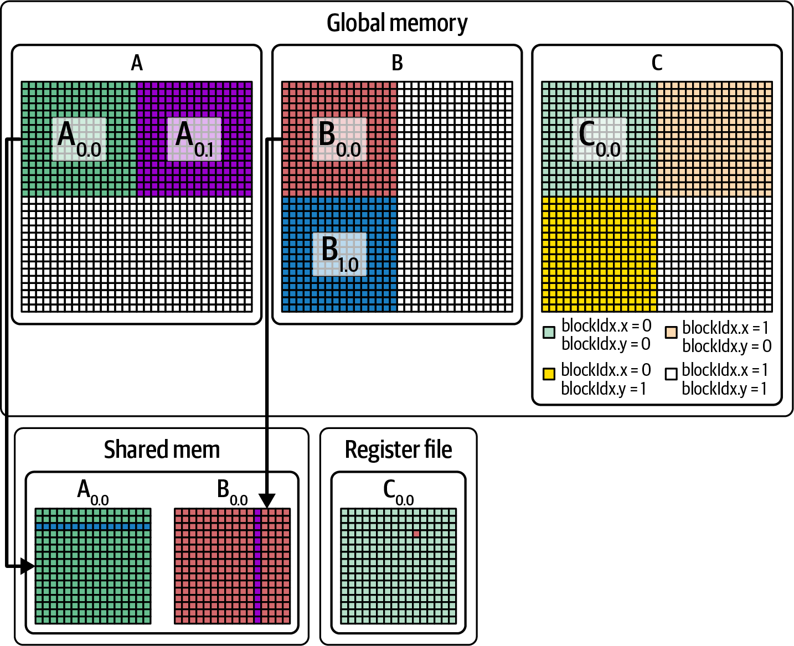

第9章 提高CUDA内核效率和算术强度 (Increasing CUDA Kernel Efficiency and Arithmetic Intensity)¶
即使您通过大规模并行性和高ILP完全隐藏了延迟，内核的性能仍可能受限于每次内存访问所做的有用工作量。算术强度，也称为操作强度，衡量每字节从内存传输的数据执行多少浮点运算，或每字节FLOPS。
Even if you fully hide latency with massive parallelism and high ILP, a kernel's performance may still be limited by how much useful work it does per memory access. Arithmetic intensity, also called operational intensity, measures how many floating-point operations are performed per byte of data transferred from memory, or FLOPS per byte.
新一代GPU的计算吞吐量提升远超内存带宽。这种不断扩大的差距意味着增加算术强度比以往任何时候都更加关键。更高的算术强度表示内核对每个获取的字节做更多计算，这对于充分利用GPU的计算能力至关重要。
Newer GPU generations are advancing compute throughput well beyond memory bandwidth. This widening gap means that increasing arithmetic intensity is even more critical than ever. Higher arithmetic intensity indicates a kernel does more computation for each byte fetched, which is essential for fully utilizing the GPU's computational capabilities.
算术强度是屋顶线性能模型中的关键指标。屋顶线模型是一个有用的可视化工具，将内核性能（FLOPs/sec）相对于算术强度（FLOPs/byte）进行绘制。它显示内存带宽和计算吞吐量的硬件上限（屋顶），使我们能够看到内核是内存受限（性能受内存传输限制）还是计算受限（性能受ALU吞吐量限制）。
Arithmetic intensity is a key metric in the Roofline performance model. The Roofline model is a useful visual tool that plots kernel performance (FLOPs/sec) against arithmetic intensity (FLOPs/byte). It shows hardware ceilings (roofs) for memory bandwidth and compute throughput, allowing us to see if a kernel is memory bound, performance limited by memory transfers, or compute bound, performance limited by ALU throughput.
在实践中，您可以使用Nsight Compute等工具生成屋顶线图，其中包括屋顶线分析视图。使用这些工具，您可以验证内核最初是内存受限还是计算受限--然后在进行优化时继续分析和验证改进。
In practice, you can generate roofline charts using tools like Nsight Compute, which includes a Roofline analysis view. Using these tools, you can verify if your kernel is initially memory bound or compute bound-then continue to profile and verify improvements as you make optimizations.
目标是将内核推向计算受限状态，并利用GPU日益增长的计算能力。屋顶线性能模型可以正确指导您的优化朝着该目标进行。
The goal is to push the kernel toward the compute-bound regime and leverage the GPUs increasing computational power. A Roofline performance model can properly guide your optimizations toward that goal.
如前一章所示，屋顶线图使用一条水平线表示硬件的峰值计算吞吐量（屋顶）--一条从原点出发的对角线表示受内存带宽限制的可实现峰值吞吐量。内核的算术强度决定它在x轴上的位置，其性能可以与这些上限进行比较，如图9-1所示。
As shown in a previous chapter, a roofline chart uses one horizontal line to represent the hardware's peak compute throughput (the roof)-and a diagonal line from the origin represents the peak achievable throughput limited by memory bandwidth. A kernel's arithmetic intensity determines where it falls on the x-axis, and its performance can be compared against these ceilings, as shown in Figure 9-1.

Figure 9-1. Example Roofline model (GFLOP/s versus arithmetic intensity in FLOPs/byte)
算术强度低的内核，或每移动字节数据只有少量数学操作，将是内存受限的。在这种情况下，内核的速度受硬件内存带宽限制，因为GPU大部分时间在等待数据而不是进行计算。
A kernel with low arithmetic intensity, or few math operations per byte of data moved, will be memory bound. In this case, the kernel's speed is capped by the hardware's memory bandwidth, because the GPU spends most of its time waiting for data rather than crunching numbers.
相反，算术强度很高的内核，或每移动字节有很多FLOPs，将是计算受限的，因为它在接近峰值能力的情况下利用ALU和Tensor Core。在这种情况下，内核的内存带宽使用是次要关注点。
Conversely, a kernel with very high arithmetic intensity, or many FLOPs per byte moved, will be compute bound because it is utilizing ALUs and Tensor Cores near their peak capacity. In this case, the kernel's memory bandwidth usage is a secondary concern.
目标始终是在可能的情况下增加算术强度，通过对每字节从全局内存传输的数据做更多计算工作（每字节FLOPs）。您可以使用循环分块重用数据、使用片上L1/共享内存进行重用，以及将多个内核融合为一个以使中间结果不写入全局内存等技术来增加算术强度。
The goal is always to increase arithmetic intensity where possible by doing more computational work for each byte of data transferred to and from global memory (FLOPs per byte). You can increase arithmetic intensity using techniques like loop tiling to reuse data, using on-chip L1/shared memory for reuse, and fusing multiple kernels into one so that intermediate results don't get written to global memory.
现代编译器框架如PyTorch的TorchInductor会自动执行其中一些优化，以将计算保持在GPU上，减少片外内存流量，并增加有效算术强度。但是，作为开发人员，您可能仍需要手动组合这些技术或编写自定义CUDA内核，以确保数据在被驱逐出缓存之前得到最优重用。
Modern compiler frameworks such as PyTorch's TorchInductor automatically do some of these optimizations to keep computations on the GPU, reduce off-chip memory traffic, and increase effective arithmetic intensity. However, as a developer, you may still need to manually combine these techniques or write custom CUDA kernels to ensure that data is reused optimally before being evicted from caches, for instance.
您还可以使用低精度数据类型（FP16、FP8、FP4）来减少内存传输量--并利用Tensor Core增加每秒FLOPs。这些共同将增加每字节FLOPs比率并增加算术强度。接下来，让我们讨论其中一些技术。
You can also use lower-precision data types (FP16, FP8, FP4) to reduce the amount of memory transfers-and utilize Tensor Cores to increase FLOPs per second. Together, these will increase the FLOPs per byte ratio and increase arithmetic intensity. Next, let's discuss some of these techniques.
请记住，并非每个工作负载都能轻易增加其算术强度。它受算法特性约束。但是，您应该寻找任何机会改进算法、重用数据、融合操作并增加批量大小以提高算术强度而不改变算法的结果（例如精度）。
Keep in mind that not every workload can easily increase its arithmetic intensity. It's constrained by algorithm characteristics. However, you should look for any opportunity to improve the algorithm, reuse data, fuse operations, and increase batch sizes to raise arithmetic intensity without changing the algorithm's result (e.g., accuracy).
多级微块化和软件预取 (Multilevel Microtiling and Software Prefetching)¶
如第7章所述，分块（也称为分块或阻塞）和数据重用是提高算术强度的有效方法。在该章中，我们展示了如何将A和B的小子矩阵（块）加载到共享内存中，使从全局内存获取的每个字节可用于静态随机存取存储器（SRAM）速度下的许多乘累加操作。
As discussed in Chapter 7, tiling (aka chunking or blocking) and data reuse are an effective way to raise arithmetic intensity. In that chapter, we showed how loading a small submatrix (tile) of A and B into shared memory lets each byte fetched from global memory be used for many multiply-accumulate operations at static random-access memory (SRAM) speed.
每当您重构代码使每个元素加载一次并被使用数十或数百次时，就像分块的情况一样，您将每字节FLOPs比率乘以重用因子。例如，在典型的矩阵乘法中，A和B的32x32块为共享内存中的每个元素产生1,024（1,024 = 32 x 32）次独立乘法。因此，与每次操作直接从DRAM获取每个元素相比，算术强度提高了。
Whenever you restructure code so that each element is loaded once and used tens or hundreds of times, like in the case of tiling, you multiply your FLOPs per byte ratio by the reuse factor. For instance, in a typical matrix multiply, a 32 x 32 tile of A and B produces 1,024 (1,024 = 32 x 32) independent multiplies for each element in shared memory. As such, the arithmetic intensity rises compared to fetching each element directly from DRAM for every operation.
除了简单的共享内存分块外，您还可以通过多级分块进一步提高强度并暴露更多ILP。使用多级分块，在将块暂存到共享内存后，您让每个线程使用向量化类型如float4和
Beyond simple shared-memory tiling, you can further increase intensity and expose more ILP with multilevel tiling. With multilevel tiling, after staging a tile into shared memory, you have each thread load microtiles into registers using vectorized types such as float4 and
. This way, repeated operations happen entirely in registers. An example of multilevel tiling is shown in Figure 9-2.

Figure 9-2. Multilevel tiling between global memory (DRAM), shared memory (SMEM), and registers
这种SM内重用（寄存器→SMEM→DRAM）减少了每一级的工作集--并最小化了片外流量。一如既往，确保在填充共享内存时合并全局读取，并填充/交叉共享数据以避免内存bank冲突，如我们在第7章中介绍的那样。
This intra-SM reuse (register → SMEM → DRAM) reduces the working set at every level-and minimizes off-chip traffic. As always, be sure to coalesce global reads when filling shared memory and pad/swizzle shared data to avoid memory-bank conflicts, as we covered in Chapter 7.
在现代GPU上，这些内循环分块步骤通常通过使用MMA片段API来覆盖。硬件使用Tensor Core指令在共享内存和张量内存（TMEM）之间隐式移动数据。TMEM使用由编译器和库管理。在现代GPU上，tcgen05指令在共享内存和TMEM之间隐式暂存数据。它们使用独特的TMEM地址空间。但是，开发人员在实现某些算法时仍可以手动使用cp.async或TMA将块移动到共享内存，并需要显式控制。
On modern GPUs, these inner-loop tiling steps are often covered by using MMA fragment APIs. The hardware moves data between shared memory and Tensor Memory (TMEM) implicitly using Tensor Core instructions. TMEM usage is managed by the compiler and libraries. On modern GPUs, tcgen05 instructions implicitly stage data between shared memory and TMEM. They use a distinct TMEM address space. However, developers can still manually move tiles into shared memory with cp.async or TMA when implementing certain algorithms and need explicit control.
一个密切相关的技术是软件预取，通常实现为双缓冲。例如，不是等到当前块的计算完成，您可以向共享内存发出下一个块的异步加载。这将重叠DRAM→共享内存（SMEM）传输与正在进行的算术。仔细的预取可以显著减少停顿时间并提高吞吐量。其思想是将数据传输与计算重叠，使ALU永远不会因等待数据而饥饿。
A closely related technique is software prefetching, which is often implemented as double buffering. For instance, instead of waiting until the current tile's computations finish, you can issue asynchronous loads for the next tile into shared memory. This will overlap DRAM → shared-memory (SMEM) transfers with ongoing arithmetic. Careful prefetching can significantly reduce stall time and improve throughput. The idea is to overlap data transfer with computation so the ALUs never starve waiting for data.
当在CPU-GPU超级芯片（如Grace Blackwell）上使用统一内存时，您可以使用cudaMemPrefetchAsync()提示很快将需要某个块。这向运行时提示通过NVLink-C2C迁移页面。但是，预取只是一个提示而不是保证。您仍然希望确保您正在重叠传输并适当同步以避免页面错误停顿。以这种方式重叠数据移动与计算确保每当需要新块时ALU保持供给。这进一步隐藏了内存延迟--并提高了实现的FLOPS。
When using unified memory with a CPU-GPU superchip like Grace Blackwell, you can use cudaMemPrefetchAsync() to hint that a tile will be needed soon. This hints at the runtime to migrate pages over NVLink-C2C. However, prefetch is just a hint and not a guarantee. You still want to make sure you are overlapping transfers and synchronizing appropriately to avoid page fault stalls. Overlapping data movement with compute in this way ensures the ALUs remain fed whenever a new tile is needed. This further hides memory latency-and boosts achieved FLOPS.
统一内存简化了开发，但可能无法产生最佳性能。专家用户通常更喜欢显式cudaMemcpy或固定内存分配，以完全避免页面迁移开销。
Unified memory eases development but may not produce the best performance. Expert users often prefer explicit cudaMemcpy or pinned memory allocations to fully avoid page migration overheads.
简而言之，DRAM中的每个字节在片上级别（寄存器或共享内存）被重用的次数越多，您的算术强度就越高。更高的算术强度将内核推向计算受限状态。
In short, the more times that each byte from DRAM is reused at the on-chip levels (registers or shared memory), the higher your arithmetic intensity. And higher arithmetic intensity moves the kernel closer into the compute-bound regime.
使用线程块集群进行分块 (Tiling with Thread Block Clusters)¶
在现代GPU上，您可以使用来自协作组的CUDA线程块集群扩展分块重用思想（在第10章讨论）。这些允许多个线程块使用分布式共享内存（DSMEM）共享数据，如图9-3所示。
On modern GPUs, you can extend the tiling-reuse idea using CUDA thread-block clusters from Cooperative Groups (discussed in Chapter 10). These allow multiple thread blocks to share data using distributed shared memory (DSMEM), as shown in Figure 9-3.

Figure 9-3. DSMEM shared by CTAs (thread blocks) within a CGA
我们将在下一章详细介绍CGA和线程块集群，但在这里值得一提，因为它们可以直接增加算术强度。例如，四个线程块的集群可以使用张量内存加速器（TMA）多播功能协作加载一个块，如图9-4所示，该图使用四个CTA演示此机制。
We cover CGAs and thread block clusters in detail in the next chapter, but they're worth mentioning here, as they can directly increase arithmetic intensity. For example, a cluster of four thread blocks can cooperatively load one tile using the Tensor Memory Accelerator (TMA) multicast feature, as shown in Figure 9-4, which uses four CTAs to demonstrate this mechanism.

Figure 9-4. For these four (2 x 2) thread block clusters, each tile of A and B is loaded into four CTAs (thread blocks) simultaneously using multicast (source: https://oreil.ly/EEO_O)
每个块在四个线程块之间分区，因此该块的全局内存流量在集群上分摊。块只获取一次并被所有四个线程块重用。
Each tile is partitioned across the four thread blocks so that global memory traffic for that tile is amortized over the cluster. The tiles are fetched only once and reused by all four thread blocks.
当四个CTA使用多播重用相同数据时，线程块集群可以在2x2集群中将全局内存流量减少多达4倍。此外，线程块集群通过降低分母或从全局内存移动的字节数来增加每个GPU的算术强度。这些的一种特殊形式称为线程块对，将在稍后在Tensor Core分块的上下文中讨论。
Thread block clusters can reduce global memory traffic by up to 4x in a 2 x 2 cluster when four CTAs reuse the same data using multicast. Also, thread block clusters increase arithmetic intensity per GPU by lowering the denominator, or number of bytes moved from global memory. A specialized form of these called thread block pairs will be discussed in a bit-in the context of tiling with Tensor Cores.
Blackwell支持多达16个线程块的线程块集群，当您选择超出默认可移植限制8个CTA的非可移植集群大小时。要启用此功能，请在内核上设置cudaFuncAttributeNonPortableClusterSizeAllowed属性。较大的集群可以提高重用率，但可能会降低占用率，因此在启用16之前请进行分析。这可以支持更大的多SM分块，最大化数据重用（16倍）并以类似倍数增加算术强度。
Blackwell supports thread block clusters up to 16 thread blocks when you opt into a nonportable cluster size beyond the default portable limit of 8 CTAs. To enable this, set the cudaFuncAttributeNonPortableClusterSizeAllowed attribute on the kernel. Larger clusters can raise reuse but may reduce occupancy, so profile before enabling 16. This can support even larger multi-SM tiles, which maximizes data reuse (16x) and increases arithmetic intensity by a similar factor.
内核融合 (Kernel Fusion)¶
增加算术强度的另一种方法是将多个操作--或循环迭代--融合为一个操作。通过将多个内核融合在一起，从内存加载的数据可以在写回之前用于多次计算和迭代。
Another way to increase arithmetic intensity is to fuse multiple operations-or loop iterations-into one operation. By fusing together multiple kernels, the data loaded from memory can be used for several computations and iterations before being written back.
类似地，上一节讨论的循环展开允许单个线程对每个加载的数据元素执行更多计算，但以更多寄存器使用为代价。过多融合会增加每线程寄存器压力并降低占用率，因此存在权衡。
Similarly, loop unrolling, discussed in the previous section, allows a single thread to perform more calculations on each loaded data element, but at the cost of more register usage. Too much fusion can increase per-thread register pressure and reduce occupancy, so there's a trade-off.
始终分析融合内核。如果寄存器使用变得过多并开始溢出到本地内存，融合的好处可能会被额外的内存流量抵消。但是，如果您找到正确的平衡，您可以改善每移动字节的FLOPS，如果内存带宽是限制因素，这是有益的。
Always profile fused kernels. If register usage becomes excessive and starts spilling to local memory, the benefits of fusion might be offset by the additional memory traffic. If you find the right balance, however, you can improve the FLOPS per byte moved, and this is beneficial if memory bandwidth is a limiting factor.
现代深度学习框架可以通过其即时编译器和图优化器自动融合和展开。例如，PyTorch的torch.compile，特别是TorchInductor，可以自动融合逐元素操作序列。我们将在第13章和第14章介绍PyTorch编译器。
Modern deep learning frameworks can automatically fuse and unroll through their just-in-time compilers and graph optimizers. For instance, PyTorch's torch.compile, and specifically TorchInductor, can automatically fuse sequences of elementwise operations. We cover the PyTorch compiler in Chapters 13 and 14.
逐元素操作（也称为点对点操作）对张量的每个元素独立应用简单计算。融合这些逐元素操作通过将中间值保持在片上来消除不必要的内存流量。这增加了从全局内存获取的每字节所做的工作量--提高了算术强度。
Elementwise operations, also called pointwise operations, apply a simple computation independently to each element of a tensor. Fusing these elementwise operations eliminates unnecessary memory traffic by keeping intermediate values on-chip. This increases the amount of work done per byte fetched from global memory-raising the arithmetic intensity.
例如，朴素实现启动两个内核。第一个内核读取x并将y写入全局内存。第二个读取y并写入z：
For instance, the naive implementation launches two kernels. The first kernel reads x and writes y to global memory. The second reads y and writes z:
在这里，每个元素被触摸两次：一次在sin(x)之后，一次在sqrt(y)之后。因此，每个内核的算术强度非常低，因为它对每个元素--每个加载/存储操作--只执行一个昂贵的数学函数（一个多周期ALU指令）。相比之下，融合内核在单次传递中执行这组相同的操作：
Here, each element is touched twice: once after sin(x) and once after sqrt(y). As such, each kernel's arithmetic intensity is very low, since it performs just one expensive math function (a multicycle ALU instruction) per element-per load/store operation. In contrast, the fused kernel performs this same set of operations in a single pass:
每个x[i]加载一次，然后在寄存器中应用sin和sqrt，只有最终的z[i]写入内存。因为中间的y永远不会输出到全局内存，有效的每字节FLOPS急剧上升，将操作推向计算屋顶。
Each x[i] is loaded once, then both sin and sqrt are applied in registers, and only the final z[i] is written to memory. Because the intermediate y never goes out to global memory, the effective FLOPS per byte jump sharply, moving the operation closer to the compute roof.
作为经验法则，如果数据将被同一线程块中的线程多次读取，通常值得将数据暂存到共享内存中以消除冗余的全局加载。这将帮助您的内核从内存受限状态提升到计算受限状态，以更好地利用充足的GPU FLOPS。
As a rule of thumb, if data will be read more than once by threads in the same thread block, it's often worth staging the data into shared memory to eliminate redundant global loads. This will help lift your kernel out of the memory-bound regime and into the compute-bound regime to better utilize the ample GPU FLOPS.
融合减少了全局内存流量并增加了算术强度，因为每个元素现在对每次读取和写入内存操作经历两次数学操作。在我们的示例中，我们将每元素的FLOPS翻倍（sin + sqrt），同时大致减半内存流量，因为没有中间写入。这产生了显著更高的算术强度或FLOPS/byte。
Fusion reduces global memory traffic and increases arithmetic intensity since each element now undergoes two math operations for each read and write memory operation. In our example, we doubled the FLOPS per element (sin + sqrt) while roughly halving the memory traffic since there is no intermediate write. This produces a significantly higher arithmetic intensity, or FLOPS/byte.
为了说明这一点，让我们用一个具体示例演示算术强度。假设我们想对2D张量x（形状[batch, hidden]）的每个长度为hidden的行进行L2归一化。对于每行b，计算单个范数，norm_b = sqrt(Σ_i x[b,i]*x[b,i] + ε)，然后对所有i写入y[b,i] = x[b,i] / norm_b。
To drive this point home, let's demonstrate arithmetic intensity with a concrete example. Suppose we want to L2-normalize each length-hidden row of a 2D tensor x (shape [batch, hidden]). For each row b, compute a single norm, norm_b = sqrt(Σ_i x[b,i]*x[b,i] + ε), and then write y[b,i] = x[b,i] / norm_b for all i.
朴素实现会在一个内核中平方，在第二个内核中将每行归约为标量，在第三个内核中除法。这将需要多次内核启动并中间写入HBM。
A naive implementation would square in one kernel, reduce each row to a scalar in a second kernel, and divide in a third kernel. This would require multiple kernel launches with intermediate writes to HBM.
让我们假设4个内核中的每一个需要1 FLOP的计算。因此，4个内核中每一个的算术强度是每12字节1 FLOP（2次float读取，1次float写入），或0.083 FLOPS/byte。
Let's assume that each of the 4 kernels requires 1 FLOP of compute. As such, the arithmetic intensity of each of the 4 kernels is 1 FLOP per 12 bytes (2 float reads, 1 float write), or 0.083 FLOPS/byte.
相反，我们可以将4个内核融合为单个内核并增加算术强度。手动融合的内核代码如下所示：
Instead, we can fuse the 4 kernels into a single kernel and increase the arithmetic intensity. The manually fused kernel code is shown here:
__global__ void fusedL2Norm(const float* __restrict__ x,
float* __restrict__ y,
int hidden) {
extern __shared__ float sdata[]; // reduction buffer
const int batch = blockIdx.x; // one block per batch row
const int tid = threadIdx.x;
const float* batch_ptr = x + size_t(batch) * hidden;
// 1) Accumulate sum of squares into shared memory
float local = 0.f;
for (int i = tid; i < hidden; i += blockDim.x) {
float v = batch_ptr[i];
local = fmaf(v, v, local); // v*v + local
}
sdata[tid] = local;
__syncthreads();
// 2) Parallel reduction to sdata[0]
for (int offset = blockDim.x >> 1; offset > 0; offset >>= 1) {
if (tid < offset) sdata[tid] += sdata[tid + offset];
__syncthreads();
}
// 3) Normalize (guard tiny norms)
float norm = sqrtf(sdata[0]);
float inv = rsqrtf(sdata[0]); // prefer inverse
float* out_batch = y + size_t(batch) * hidden;
for (int i = tid; i < hidden; i += blockDim.x) {
// multiply by inverse (rsqrt) vs. divide by sqrt
out_batch[i] = batch_ptr[i] * inv;
}
}
在这个融合内核中，每个线程遍历其x[b,*]切片两次--一次累积平方的局部和，一次写入归一化输出--因此全局流量约为每元素12字节（两次读取 + 一次写入）。每元素内核在归约期间做约1次乘法 + 1次加法，在归一化期间做1次乘法。
In this fused kernel, each thread walks its slice of x[b,*] twice-once to accumulate a local sum of squares and once to write the normalized outputs-so global traffic is ~12 bytes per element (two reads + one write). Per element the kernel does ~1 multiply + 1 add during the reduction and 1 multiply during the normalize.
sqrt和rsqrt在整个行上分摊。对于屋顶线定位，保守的算术强度是≈3 FLOPs / 12字节 ≈ 0.25 FLOPs/byte（加上每行sqrt的微小1/(hidden * 12)贡献）。这让我们通过给每个线程多个元素来增加ILP来隐藏sqrt和rsqrt延迟。
The sqrt and rsqrt are amortized over the whole row. For roofline placement, a conservative arithmetic intensity is ≈3 FLOPs / 12 bytes ≈ 0.25 FLOPs/byte (plus the tiny 1/(hidden * 12) contribution from the per-row sqrt). This lets us hide sqrt and rsqrt latency by giving each thread multiple elements to increase ILP.
此外，如前面的代码所示，我们计算逆平方根（rsqrtf）并乘以而不是除法。这是一种常见的微优化——特别是对于热点内循环。其思想是用高吞吐量的乘法指令流替换慢速除法指令流。我们还用更便宜的rsqrtf近似替换sqrtf。这些是微优化，因为总体而言，这个流水线是内存受限的而不是计算受限的——但强调这一点很有趣。还有另一个未在此处显示的优化。它涉及在线程块内的单个线程中执行一次rsqrtf/sqrtf，并使用共享内存将标量结果广播给其他线程。这对提高性能有更大影响。请参阅本书的GitHub存储库以获取有关此优化的更多详细信息。
Additionally, as shown in the previous code, we compute the inverse sqrt (rsqrtf) and multiply instead of dividing. This is a common micro-optimization-especially for hot inner loops. The idea is to replace a slow division instruction stream for a high-throughput multiply instruction stream. We are also trading a sqrtf with a cheaper rsqrtf approximation. These are micro-optimizations because overall, this pipeline is memory-bound and not compute-bound-but it's interesting to highlight. There is yet another optimization not shown here. It involves doing one rsqrtf/sqrtf in a single thread within the thread block and broadcasting the scalar result to the other threads using shared memory. This has more impact on improving performance. Please see the book's GitHub repo for more details on this optimization.
与具有中间写入HBM的朴素三内核流水线（平方→归约→除法）相比，融合版本至少删除了一次全局写入/读取往返和一次启动屏障。因此，其实际强度和运行时间要好得多--即使每元素FLOP/byte只有约0.25。这是由于延迟节省和缓存局部性改进。
Compared to a naive three-kernel pipeline (square → reduce → divide) with intermediate writes to HBM, the fused version removes at least one global write/read round trip and one launch barrier. As such, its intensity and runtime are much better in practice-even though the per-element FLOP/byte is only ~0.25. This is due to latency savings and cache locality improvements.
在实践中，这个单一融合内核由于更高的算术强度（FLOPS/byte）、更好的缓存局部性以及通过将三个独立内核折叠为一个而减少的启动开销，执行速度比一系列独立内核更快。
In practice, this single fused kernel executes faster than a series of separate kernels due to higher arithmetic intensity (FLOPS/byte), better cache locality, and reduced launch overhead by collapsing three separate kernels into one.
融合不仅增加算术强度并将内核更多地推向屋顶线的计算受限一侧，而且还节省内存带宽。在朴素的多内核版本中，我们必须将中间结果写入全局内存并在下一个内核中读回。在融合版本中，中间结果（例如ai*ai）永远不必离开线程的寄存器。
Fusing not only increases arithmetic intensity and pushes the kernel more toward the compute-bound side of the roofline, but it also saves memory bandwidth. In the naive, multikernel version, we have to write intermediate results to global memory and read them back in the next kernel. In the fused version, the intermediate results (e.g., ai*ai) never have to leave the thread's registers.
在代码示例中，加法可以直接使用这些寄存器来计算总和。然后sqrt可以使用该总和--所有这些都不需要额外的全局内存流量。只有最终结果写回全局内存。
In the code example, the addition can use those registers directly to calculate the sum. The sqrt can then use the sum-all without requiring additional global memory traffic. Only the final result is written back to global memory.
因此，融合内核可能对全局内存的12字节数据移动实现4 FLOPS，而朴素、未融合方法在考虑中间内存移动后对36字节的加载和存储实现4 FLOPS。这意味着更少的DRAM流量和更低的延迟。
As such, the fused kernel achieves perhaps 4 FLOPS for 12 bytes of data movement from/to global memory, whereas the naive, unfused approach achieves 4 FLOPS for 36 bytes loaded and stored after accounting for the intermediate memory movement. This means less DRAM traffic and lower latency.
这个简单示例展示了融合如何增加内核的算术强度和整体性能。让我们看看另一种通过利用GPU的Tensor Core硬件单元来增加算术强度的方法。
This simple example shows how fusion increases our kernel's arithmetic intensity and overall performance. Let's look at another way to increase arithmetic intensity by utilizing our GPUs' Tensor Core hardware units.
最先进的GPU内核使用垂直融合（组合对相同数据的顺序操作）以及水平融合（组合跨数据的并行操作）来实现更高的算术强度。像NVIDIA的CUTLASS或OpenAI的Triton（集成到PyTorch的编译器后端TorchInductor中）这样的库可以帮助您使用Tensor Core、TMEM、TMA等非常高效地实现这些不同类型的融合内核。
State-of-the-art GPU kernels achieve higher arithmetic intensity using vertical fusion, which combines sequential operations on the same data-as well as horizontal fusion, which combines parallel operations across data. Libraries like NVIDIA's CUTLASS or OpenAI's Triton (integrated into PyTorch's compiler backend, TorchInductor) can help you implement these different types of fused kernels very efficiently using Tensor Cores, TMEM, TMA, etc.
结构化稀疏 (Structured Sparsity)¶
在现代GPU上，2:4结构化稀疏由Sparse Tensor Core和cuSPARSELt在硬件中加速。2:4意味着每四个连续权重中恰好有两个是非零的。创建这种类型的稀疏性有时称为剪枝。
On modern GPUs, 2:4 structured sparsity is accelerated in hardware by Sparse Tensor Cores and cuSPARSELt. 2:4 means that exactly two out of every four consecutive weights are nonzero. Creating this type of sparsity is sometimes called pruning.
通过将一半权重剪枝为2:4模式，每次内存加载现在传递两倍数量的实际参与乘法的非零值。换句话说，您不再获取最终为零的权重。因此，您不会在您知道为零的事物上浪费矩阵乘法操作，如图9-5所示。
By pruning half of the weights into a 2:4 pattern, each memory load now delivers twice as many nonzero values that actually participate in multiplication. In other words, you are no longer fetching weights that turn out to be zero. As such, you are not wasting a matrix multiply operation on something that you know is zero, as shown in Figure 9-5.

Figure 9-5. 2:4 structured sparsity
结构化稀疏在模型训练后应用。模型被剪枝并优化用于推理。剪枝和格式转换在软件栈中完成，如cuSPARSELt和框架工具。请注意，Transformer Engine加速支持的稀疏执行，但在转换期间不强制稀疏性。
Structured sparsity is applied after a model is trained. The model is pruned and optimized for inference. Pruning and format conversion are done in software stacks such as cuSPARSELt and framework tooling. Note that the Transformer Engine accelerates supported sparse executions but does not enforce sparsity during conversion.
剪枝和格式转换在软件中处理--通常通过cuSPARSELt和框架工具。在PyTorch中，使用to_sparse_semi_structured()在部署稀疏GEMM到Sparse Tensor Core之前将训练好的密集模块转换为2:4稀疏格式。
Pruning and format conversion are handled in software-typically through cuSPARSELt and framework tooling. In PyTorch, use to_sparse_semi_structured() to convert trained dense modules into 2:4 sparse format before deploying sparse GEMMs on Sparse Tensor Cores.
一旦您的模型被转换，它将调用在Sparse Tensor Core上运行的优化稀疏GEMM内核，而不是标准内核。Sparse Tensor Core对于许多推理工作负载可以达到比其密集对应物高近2倍的加速--特别是在提交大批量输入时，因为这些分摊了内核启动开销。
Once your model is converted, it will invoke optimized sparse GEMM kernels running on the Sparse Tensor Cores instead of standard kernels. Sparse Tensor Cores can approach up to a 2x speedup over their dense counterparts for many inference workloads-especially when submitting large batches of inputs, as these amortize kernel launch overhead.
批处理是增加算术强度的一种非常常见且实用的方法。不是一次处理一个项目——以及所有相关的内存I/O等——而是在一次传递中处理多个项目，以便内存访问（例如加载权重等）在多次计算中分摊。
Batching is a very common and practical way to increase arithmetic intensity. Instead of processing one item at a time-with all of the associated memory I/O, etc.-you process multiple items in one pass so that memory access (e.g., loading weights, etc.) is amortized over multiple computations.
这给稀疏加速的矩阵乘法足够的并行工作来隐藏处理索引或压缩表示的任何开销。在较小的批量中，这种开销可能占主导地位并限制您观察到的加速量。
This gives the sparse‐accelerated matrix multiplies enough parallel work to hide any overhead from handling indices or compressed representations. In smaller batches, this overhead can dominate and limit how much speedup you observe.
2:4稀疏将在使用大型矩阵乘法时产生最大收益，这在基于transformer的模型（如LLM）中很常见。这是因为硬件可以充分利用专用的Sparse Tensor Core。这些Sparse Tensor Core直接在硬件中对半宽数据进行操作。这跳过零并在相同的周期预算内对非零元素执行两倍的工作。
2:4 sparsity will produce maximum benefit when using large matrix multiplies, which are common in transformer-based models like LLMs. This is because the hardware can fully utilize the dedicated Sparse Tensor Cores. These Sparse Tensor Cores operate on half‐width data directly in hardware. This skips zeros and performs twice the work on the nonzero elements in the same cycle budget.
由于Blackwell上的计算能力增长快于HBM带宽，结构化稀疏是保持计算受限的好方法。即使在Grace Blackwell系统上，NVLink-C2C让GPU以非常高的吞吐量从CPU内存流式传输数据，您仍然希望在每个加载的块上最大化每字节FLOPS。
Because compute capacity on Blackwell has grown faster than HBM bandwidth, structured sparsity is a great way to stay compute bound. Even on a Grace Blackwell system in which NVLink-C2C lets the GPU stream data from CPU memory at very high throughput, you still want to maximize FLOPS per byte on every loaded tile.
例如，通过以2:4模式剪枝50%的权重，您确保一半的内存流量永远不需要。这立即减少了全局内存读取并将有效算术强度提高近2倍。
By pruning 50% of weights in a 2:4 pattern, for instance, you ensure that half of your memory traffic is never needed. This immediately reduces global‐memory reads and raises effective arithmetic intensity by almost 2x.
NVIDIA GPU在硬件中实现这种2:4结构化稀疏，使得每个16元素块可以将8个元素置零。这是用于将Tensor Core吞吐量翻倍用于稀疏矩阵的模式。截至本文撰写时，没有其他任意稀疏模式获得这种特殊的硬件加速。
NVIDIA GPUs implement this 2:4 structured sparsity in hardware such that every 16-element chunk can zero out 8 elements. This is the pattern used to double Tensor Core throughput for sparse matrices. As of this writing, no other arbitrary sparsity pattern gains this special acceleration in hardware.
稀疏性的加速假设模型的精度得以保持。在实践中，剪枝后进行微调或仔细校准很重要。这样，您可以最小化精度损失。
The speedups from sparsity assume that the model's accuracy is maintained. In practice, it's important to fine-tune or carefully calibrate after pruning. This way, you can minimize accuracy loss.
在应用稀疏性之前，首先实现前面介绍的基本优化很重要：合并所有全局加载，使用分块重用数据，并融合逐元素操作以消除额外的内存往返。一旦这些基础到位并验证，结构化稀疏可以为推理提供另一个加速。
Before applying sparsity, it is important to first implement the fundamental optimizations covered previously: coalesce all global loads, reuse data using tiling, and fuse pointwise operations to eliminate extra memory round trips. Once these basics are in place and verified, structured sparsity can provide another speedup for inference.
结构化稀疏通常适用于推理工作负载。在训练期间，梯度不会从2:4稀疏中受益。此外，在梯度更新中维护稀疏性很复杂。因此，建议将其用于您已预先剪枝和校准模型的部署场景。NVIDIA的2:4稀疏Tensor Core功能主要用于推理。训练支持有限，且取决于模型和框架。在依赖它之前，请验证您的软件栈中的支持。
Structured sparsity typically applies to inference workloads. During training, gradients do not benefit from 2:4 sparsity. In addition, maintaining sparsity in gradient updates is complex. As such, it's recommended to use it for deployment scenarios in which you've prepruned and calibrated the model. NVIDIA's 2:4 sparse Tensor Core feature is primarily used for inference. Training support is limited and model-dependent and framework-dependent. Verify support in your software stack before relying on it.
重计算与内存权衡 (Recomputation Versus Memory Trade-Off)¶
此外，如果内存带宽是瓶颈，考虑按需重新计算预计算的值（例如x²），而不是存储或加载它们。例如，在寄存器中重复计算x*x通常比从全局内存加载先前计算的x²更快。廉价表达式的连续重计算可以增加算术强度，并且在内存稀缺时是一种有用的技术。
Also, instead of storing or loading precomputed values (e.g., x²), consider recomputing them on demand if memory bandwidth is the bottleneck. For instance, repeatedly computing x*x in registers is often faster than loading a previously computed x² from global memory. Continuous recomputation of cheap expressions can increase arithmetic intensity and is a useful technique whenever memory is scarce.
许多LLM推理引擎使用这种技术来节省内存。它们不是在HBM中存储大型激活张量并稍后读回，而是可以即时重新计算某些层和激活。这类似于模型训练上下文中的激活检查点。
Many LLM inference engines use this technique to save memory. Instead of storing large activation tensors in HBM and reading them back later, they can recompute certain layers and activations on the fly. This is similar to activation checkpointing in a model training context.
重计算改善有效的FLOPS/byte，并可以将大型模型放入较小的内存量中。此外，重计算释放内存用于更大的批量大小，并以少量额外FLOPS换取内存流量的显著减少。
Recomputation improves effective FLOPS/byte and can fit large models into a smaller amount of memory. In addition, recomputation frees up memory for larger batch sizes and trades a few extra FLOPS for a significant decrease in memory traffic.
PyTorch与算术强度 (PyTorch and Arithmetic Intensity)¶
在PyTorch中，许多这些想法会自动应用。如前所述，PyTorch编译器（在第13章和第14章讨论）可以自动融合逐元素操作链--甚至一些归约。它使用执行图级优化将数据保持在GPU上并尽可能重用。
In PyTorch, many of these ideas are automatically applied. As mentioned, PyTorch compiler (discussed in Chapters 13 and 14) can automatically fuse chains of elementwise operations-and even some reductions. It uses execution-graph-level optimizations to keep data on the GPU and reuse it as much as possible.
因为它在底层使用cuDNN和cuBLAS等优化库，PyTorch在使用torch.matmul执行矩阵操作时会为您执行分块并使用共享内存。此外，PyTorch的scaled_dot_product_attention（SPDA）可能根据张量形状和dtype分派到FlashAttention、内存高效或cuDNN后端。要控制后端选择，使用torch.nn.attention.sdpa_kernel(SDPBackend.FLASH_ATTENTION)等。作为注重性能的开发人员，您应该了解这些优化以及如何验证它们何时被使用。
Because it uses optimized libraries like cuDNN and cuBLAS under the hood, PyTorch will perform tiling and use shared memory for you when performing matrix operations with torch.matmul. In addition, PyTorch's scaled_dot_product_attention (SPDA) may dispatch to FlashAttention, memory-efficient, or cuDNN backends depending on tensor shapes and dtypes. To control the backend selection, use torch.nn.attention.sdpa_kernel(SDPBackend.FLASH_ATTENTION), for instance. As a performance-minded developer, you should be aware of these optimizations and how to verify when they're being used.
值得注意的是，虽然PyTorch可以识别和编译大多数操作，但一些非标准操作或自定义CUDA操作可能不会被融合。在这些情况下，可能仍需要手动优化，如融合、分块等。
It's important to note that while PyTorch can recognize and compile most operations, some nonstandard operations or custom CUDA operations might not get fused. In these cases, manual optimization may still be required, such as fusion, tiling, etc.
如果您正在编写PyTorch代码，请优先使用融合操作和执行多次计算的优化库调用，而不是长序列的单个内核启动。在实践中，这意味着使用像torch.nn.functional激活函数或torch.matmul这样的高级操作，而不是在Python中编写许多小的逐元素内核。这些库为这些类型的高级操作调用高效的内核。编译器知道如何将它们与周围的操作高效地融合。
If you're writing PyTorch code, prefer fused operations and optimized library calls that perform multiple computations rather than long sequences of individual kernel launches. In practice, this means using high-level operations like torch.nn.functional activations or torch.matmul instead of writing many small elementwise kernels in Python. These libraries call efficient kernels for these types of high-level operations. And the compiler knows how to fuse them efficiently with surrounding operations.
PyTorch的嵌套张量或锯齿张量让您表示可变长度输入的批次而无需填充。每个嵌套张量将可变长度序列打包成单个高效的基础缓冲区。
PyTorch's nested tensors, or ragged tensors, let you represent batches of variable-length inputs without padding. Each nested tensor packs the variable-length sequences into a single, efficient underlying buffer.
NestedTensor暴露正常的张量接口，但它消除了不必要的零填充。因此，全局内存加载变得更加高效，因为获取的每个字节在计算中都是有用的。
NestedTensor exposes the normal tensor interface, but it eliminates unnecessary zero-padding. As such, global-memory loads become more efficient because each byte that is fetched is useful in the computation.
嵌套张量对于具有可变长度序列的LLM很有用。使用嵌套张量时，注意力和批量矩阵乘法等操作将只从内存检索必要的数据。这将您的内核推向屋顶线模型上的计算受限状态，并有助于减少内存受限停顿。结果是更高的持续吞吐量--特别是在内存敏感的工作负载上。
Nested tensors are useful for LLMs with varying-length sequences. When using nested tensors, operations like attention and batch-matrix multiplies will retrieve only the essential data from memory. This moves your kernel closer to the compute-bound regime on the Roofline model and helps to reduce memory-bound stalls. The result is higher sustained throughput-especially on memory-sensitive workloads.
在实践中，嵌套张量需要仔细验证操作符覆盖范围和性能特征。支持取决于工作负载，加速取决于形状。您可以使用具有代表性的序列长度分布和注意力模式来验证端到端的收益。同时分析内存流量和内核时间。
In practice, nested tensors require careful validation for operator coverage and performance characteristics. Support is workload dependent, and speedups are shape dependent. You can verify end-to-end benefits with representative sequence length distributions and attention patterns. Profile both memory traffic and kernel time.
简而言之，PyTorch暴露了各种机制来增加内核的算术强度。了解这些选项并决定什么最适合您的工作负载很重要。在现代GPU上增加算术强度的另一个有效方法是使用降低精度的Tensor Core。让我们接下来介绍这些机制。
In short, PyTorch exposes various mechanisms to increase your kernel's arithmetic intensity. It's important to understand these options and decide what works best for your workload. Another effective method to increase arithmetic intensity on modern GPUs is by using the reduced-precision Tensor Cores. Let's cover these mechanisms next.
混合精度和利用Tensor Core (Mixed Precision and Utilizing Tensor Cores)¶
现代NVIDIA GPU在Tensor Core中实现降低精度计算，如TF32、FP16、FP8、FP4和INT8。Blackwell中的每个SM都有一个256 KB的片上TMEM专用于Tensor Core数据。它还有一个专门的TMA单元，在全局内存和共享内存之间异步复制块。Tensor Core指令（例如tcgen05.mma）然后在共享内存和TMEM之间隐式移动操作数和累加器。这种设计以高吞吐量为Tensor Core供给数据并最小化停顿。Blackwell的基于TMEM的累加器有助于减少寄存器压力，相对于之前直接在寄存器中累加的GPU世代。
Modern NVIDIA GPUs implement reduced‐precision computations like TF32, FP16, FP8, FP4, and INT8 in Tensor Cores. Each SM in Blackwell has a 256 KB on-chip TMEM dedicated to Tensor Core data. It also has a specialized TMA unit that asynchronously copies tiles between global memory and shared memory. Tensor Core instructions (e.g., tcgen05.mma) then move operands and accumulators between shared memory and TMEM implicitly. This design feeds the Tensor Cores at high throughput and minimizes stalls. Blackwell's TMEM-based accumulators help to reduce register pressure relative to previous GPU generations which accumulated directly in registers.
当正确使用时，这些功能可以通过将算术强度（每字节FLOPS）提高2倍、4倍甚至8倍，将曾经内存受限、张量密集的内核转变为完全计算受限的内核。您可以通过监控Nsight Compute中的屋顶线图和停顿统计来验证影响。Nsight Compute的光速分析显示内存受限停顿原因，如"Memory Throttle"和缓存未命中。当使用低精度格式的Tensor Core时，这些将显著下降。Nsight Compute集成了屋顶线图来交叉检查算术强度是否增加以将内核推向计算屋顶。
When used correctly, these features can transform a once memory‐bound, tensor‐heavy kernel into a fully compute‐bound one by raising arithmetic intensity (FLOPS per byte) by 2x, 4x, or even 8x. You can verify the impact by monitoring the Roofline chart and Stall Stats in Nsight Compute. Nsight Compute's Speed of Light analysis shows memory-bound stall reasons such as "Memory Throttle" and cache misses. These will drop significantly when using Tensor Cores with lower precision formats. And Nsight Compute integrates a Roofline chart to cross-check if arithmetic intensity increased to push your kernel toward the compute roof.
当您从FP32转向TF32、FP16、FP8或FP4等低精度Tensor Core内核时，Nsight Compute的线程束停顿指标通常显示内存相关停顿的减少，以及依赖或流水线停顿的相对增加。这表明算术强度增加，并从内存受限向计算受限执行转变。
As you move from FP32 to lower-precision Tensor Core kernels such as TF32, FP16, FP8, or FP4, Nsight Compute's Warp Stall metrics typically show a reduction in memory-related stall as well as a relative increase in dependency or pipeline stalls. This indicates an increase in arithmetic intensity and a shift from memory-bound toward compute-bound execution.
使用TMEM和TMA为Tensor Core供给数据 (Feeding Tensor Cores with TMEM and TMA)¶
高吞吐量张量计算的核心是TMEM，每个SM的256 KB SRAM缓冲区。在高层次上，程序员不显式分配或管理TMEM。当您使用Tensor Core操作时，TMEM由硬件或库处理。TMEM如图9-6所示。
At the heart of high‐throughput tensor computation is TMEM, a 256 KB SRAM buffer per SM. At a high level, programmers do not explicitly allocate or manage TMEM, however. TMEM is handled by the hardware or libraries when you use Tensor Core operations. TMEM is shown in Figure 9-6.

Figure 9-6. TMEM supports the Tensor Cores by accumulating partial results (instead of registers)
在底层，Blackwell使用与TMEM一起操作的tcgen05.mma指令进行操作数和累加器存储。CUTLASS和库内核通过内核配置和并行线程执行（PTX）汇编管理所需的分配和使用。因此，Transformer Engine使用TMEM存储部分结果。这减少了MMA对寄存器的依赖。
Under the hood, Blackwell uses tcgen05.mma instructions that operate with TMEM for operand and accumulator storage. CUTLASS and library kernels manage the required allocation and usage through the kernel configuration and Parallel Thread Execution (PTX) assembly. As such, the Transformer Engine uses TMEM for partial results. This reduces the MMA dependencies on registers.
像CUTLASS这样的高级API自动为您处理所有这些复杂性。尽可能使用CUTLASS和其他高级库，因为CUTLASS使用tcgen05.* PTX指令，这些指令实现了Tensor Core矩阵操作和内存加载/存储接口。
High-level APIs like CUTLASS handle all of this complexity for you automatically. Use CUTLASS and other high-level libraries when possible as CUTLASS uses the tcgen05.* PTX instructions, which implement the Tensor Core matrix operations and memory load/store interfaces.
每当您使用CUDA MMA内建函数或CUTLASS GEMM启动Tensor Core MMA操作时，实现通过共享内存和TMEM管理操作数移动。TMA在全局内存和共享内存之间流式传输块，Tensor Core指令在共享内存和TMEM之间隐式移动操作数。
Whenever you launch a Tensor Core MMA operation using CUDA MMA intrinsics or a CUTLASS GEMM, the implementation manages operand movement through shared memory and TMEM. TMA streams tiles between global memory and shared memory, and Tensor Core instructions move operands between shared memory and TMEM implicitly.
Nsight Compute包括内置的屋顶线和光速分析，以确认您的内核在采用低精度Tensor Core路径后是否从内存受限转变为计算受限。
Nsight Compute includes a built-in roofline and speed-of-light analysis to confirm whether your kernel shifted from memory bound to compute bound after adopting low-precision Tensor Core paths.
Tensor Core指令然后作为MMA流水线的一部分在共享内存和TMEM之间移动操作数。这在幕后发生，无需显式用户代码。这样，数据被暂存在Tensor Core需要的地方。要从全局内存执行此数据传输到共享内存，请使用TMA或带有CUDA Pipeline API（<cuda/pipeline>）中流水线的cuda::memcpy_async。在代码中，使用cuda::memcpy_async和CUDA Pipeline API实现简单的两阶段流水线如下所示：
Tensor Core instructions then move operands between shared memory and TMEM as part of the MMA pipeline. This happens behind the scenes and without explicit user code. This way, the data is staged where the Tensor Cores need it. To perform this data transfer from global memory into shared memory, use TMA or cuda::memcpy_async with a pipeline from the CUDA Pipeline API (
.) In code, implementing a simple two-stage pipeline with cuda::memcpy_async and the CUDA Pipeline API looks like the following:
// two_stage_pipeline.cu
#include <cuda/pipeline>
#include <cooperative_groups.h>
namespace cg = cooperative_groups;
extern "C" __global__
void stage_ab_tiles(const float* __restrict__ globalA,
const float* __restrict__ globalB,
float* __restrict__ outC,
int tile_elems,
int num_tiles) {
// Alignment / size guards for vectorized copies (runtime parameter)
assert((tile_elems % (32 * 4)) == 0 &&
"tile_elems must be multiple of 128 for float4 vectorization");
// If you cannot guarantee 16B alignment or sizes, handle
// the tail/ragged edges with a fallback 4B loop.
extern __shared__ float smem[];
auto block = cg::this_thread_block();
// Shared buffers for double buffering of A and B
float* A0 = smem + 0 * tile_elems;
float* A1 = smem + 1 * tile_elems;
float* B0 = smem + 2 * tile_elems;
float* B1 = smem + 3 * tile_elems;
constexpr auto scope = cuda::thread_scope_block;
constexpr int stages = 2;
__shared__ cuda::pipeline_shared_state<scope, stages> pstate;
auto pipe = cuda::make_pipeline(block, &pstate);
// Prime the pipeline with tile 0
pipe.producer_acquire();
cuda::memcpy_async(block, A0, globalA + 0 * tile_elems,
cuda::aligned_size_t<32>{tile_elems * sizeof(float)}, pipe);
cuda::memcpy_async(block, B0, globalB + 0 * tile_elems,
cuda::aligned_size_t<32>{tile_elems * sizeof(float)}, pipe);
pipe.producer_commit();
for (int t = 1; t < num_tiles; ++t) {
// Stage the next A and B tiles
pipe.producer_acquire();
cuda::memcpy_async(block, (t & 1) ? A1 : A0,
globalA + t * tile_elems,
cuda::aligned_size_t<32>{tile_elems*sizeof(float)}, pipe);
cuda::memcpy_async(block, (t & 1) ? B1 : B0,
globalB + t * tile_elems,
cuda::aligned_size_t<32>{tile_elems*sizeof(float)}, pipe);
pipe.producer_commit();
// Consume the previously staged tiles
pipe.consumer_wait();
float* prevA = (t & 1) ? A0 : A1;
float* prevB = (t & 1) ? B0 : B1;
// Perform compute using prevA and prevB
pipe.consumer_release();
}
// Consume the final staged tiles
pipe.consumer_wait();
int last = (num_tiles - 1) & 1;
float* lastA = last ? A1 : A0;
float* lastB = last ? B1 : B0;
// Perform compute using lastA and lastB
pipe.consumer_release();
}
import torch
torch.set_float32_matmul_precision('high') # {'highest'|'high'|'medium'}
with torch.amp.autocast("cuda", dtype=torch.bfloat16):
output = model(input)
启动此内核时，将动态共享内存大小设置为4 x tile_elems x sizeof(float)，以便在共享内存中分配A0、A1、B0和B1。这种双缓冲模式确保一旦一个块驻留在共享内存中，Tensor Core就可以开始处理它。同时，cuda::memcpy_async并行地将下一个块获取到共享内存中。因为TMEM为Tensor Core指令提供片上数据缓冲区，共享内存提供暂存空间，您可以完全在片上暂存和重用FP16、FP8或FP4块。结果是当流水线调优得当且块和副本大小适当时，停顿更少。cuda::memcpy_async可以重叠从HBM到共享内存的传输并保持内核忙碌。这有助于将内存延迟隐藏在计算之后。
When launching this kernel, set the dynamic shared memory size to 4 x tile_elems x sizeof(float) to allocate A0, A1, B0, and B1 in shared memory. This double buffering pattern ensures that as soon as one tile is resident in shared memory, Tensor Cores can begin processing it. Meanwhile cuda::memcpy_async fetches the next tile into shared memory in parallel. Because TMEM provides an on-chip data buffer for Tensor Core instructions and shared memory provides the staging space, you can stage and reuse FP16, FP8, or FP4 tiles entirely on chip. The result is fewer stalls when the pipeline is tuned and the tiles and copies are sized appropriately. cuda::memcpy_async can overlap transfers from HBM to shared memory and keep the kernel busy. This helps hide memory latency behind computation.
TF32和自动混合精度（PyTorch）(TF32 and Automatic Mixed Precision (PyTorch))¶
虽然Tensor Core最初是为FP16设计的，但它们也支持TF32，它介于FP32和FP16之间。TF32使用8位指数（像FP32）和10位尾数（像FP16）。TF32在Tensor Core上执行，吞吐量远高于FP32在CUDA核心上的执行，同时保留FP32的指数范围。在PyTorch中，启用TF32只需在PyTorch代码中设置以下内容：
While Tensor Cores were originally designed for FP16, they also support TF32, which sits between FP32 and FP16. TF32 uses an 8-bit exponent like FP32 and a 10-bit mantissa like FP16. TF32 executes on Tensor Cores at substantially higher throughput than FP32 on CUDA cores while preserving FP32's exponent range. In PyTorch, enabling TF32 is as simple as setting the following in your PyTorch code:
一旦设置了这些标志，像torch.matmul和torch.nn.Linear这样的高级操作将自动作为TF32 Tensor Core内核执行，而不是在标准CUDA核心上以FP32执行。
Once these flags are set, high‐level operations such as torch.matmul and torch.nn.Linear automatically execute as TF32 Tensor Core kernels rather than in FP32 on standard CUDA cores.
除了TF32，PyTorch的自动混合精度（AMP）可以为每个操作选择最佳精度（FP16或BF16），并以FP32累加结果以保持稳定性。BF16有助于避免FP16的溢出问题。默认情况下，CUDA autocast使用float-16。只需传递dtype=torch.bfloat16即可在支持它的GPU上选择BF16。例如，您可以将模型代码包装在上下文管理器中，如下所示：
Beyond TF32, PyTorch's automatic mixed precision (AMP) can choose the optimal precision (FP16 or BF16) for each operation and accumulate the results in FP32 for stability. BF16 helps avoid FP16's overflow issues. By default, CUDA autocast uses float-16. Simply pass dtype=torch.bfloat16 to opt into BF16 on GPUs that support it. For instance, you can wrap your model code in a context manager, as shown here:
在底层，TorchInductor（在第13章和第14章介绍）自动融合这些精度转换以确保以下内容：大型GEMM操作在Tensor Core上以FP16或TF32运行，累加保持FP32以保持数值稳定性，小型"敏感"内核如层归一化和softmax以FP32运行，GradScaler防止FP16训练期间的下溢。请注意，BF16具有FP32指数范围。因此，使用BF16训练时通常不需要GradScaler。
Under the hood, TorchInductor (covered in Chapters 13 and 14) fuses these precision conversions automatically to ensure the following: large GEMM operations run on Tensor Cores in FP16 or TF32, accumulation remains in FP32 for numeric stability, small "sensitive" kernels like layer normalization and softmax run in FP32, and GradScaler prevents underflow during training with FP16. Note that BF16 has FP32 exponent range. As such, GradScaler typically isn't needed when training with BF16.
在PyTorch中，这些混合精度决策集成到编译器中，因此您无需手动干预即可获得最佳dtype选择（例如，FP16/FP8用于计算，FP32用于累加）。这如图9-7所示，作为混合精度矩阵乘累加（MMA）。
In PyTorch, these mixed-precision decisions are integrated into the compiler so you get optimal dtype selection (e.g., FP16/FP8 for compute, FP32 for accumulations) without requiring manual intervention. This is shown in Figure 9-7 as a mixed-precision matrix multiply-accumulate (MMA).

Figure 9-7. Mixed-precision and matrix multiply-accumulate (MMA)
这种自动混合精度流水线以最少的代码更改最大化算术强度。融合的Tensor Core内核通过在共享内存（例如操作数）和TMEM（例如累加器）中暂存和重用数据，最小化到HBM的往返。
This automatic mixed-precision pipeline maximizes arithmetic intensity with minimal code changes. The fused Tensor Core kernels minimize round trips to HBM by staging and reusing data in shared memory (e.g., operands) and TMEM (e.g., accumulators).
当使用前面描述的结构化稀疏或极低精度（FP8/FP4）时，请确保保持足够大的批量大小或块粒度，以便TMEM和Tensor Core保持充分利用。小批量会产生开销，包括格式转换、稀疏索引处理、不规则内存模式等。这可能会降低实现的加速。
When using structured sparsity, described earlier, or extreme low-precision (FP8/FP4), be sure to maintain a large enough batch size or tile granularity so that TMEM and Tensor Cores remain fully utilized. Small batches incur overhead, including format conversions, sparse index handling, irregular memory patterns, etc. This can reduce achieved speedups.
例如，当使用FP8或2:4稀疏时，批量大小为1可能几乎看不到好处，因为固定开销没有被分摊。相比之下，批量大小为128或256将充分利用TMEM流水线并产生接近峰值的吞吐量。
For example, when using FP8 or 2:4 sparsity, a batch size of 1 may see little benefit because the fixed overhead isn't amortized. In contrast, a batch size of 128 or 256 will fully utilize the TMEM pipeline and produce near-peak throughput.
BF16/FP16、FP8和FP4降低精度 (BF16/FP16, FP8, and FP4 Reduced Precision)¶
BF16/FP16（半精度）已被许多GPU世代支持，但现代GPU上的Tensor Core通常可以维持BF16/FP16峰值吞吐量的90%以上，约为FP32峰值吞吐量的4倍。这是因为每个周期，硬件并行发出许多BF16/FP16 FMA操作。
BF16/FP16 (half-precision) has been supported for many GPU generations, but Tensor Cores on modern GPUs can often sustain greater than 90% of the BF16/FP16 peak throughput, around 4x the FP32 peak throughput. This is because at each cycle, the hardware issues many BF16/FP16 FMA operations in parallel.
FP16训练使用比FP32更窄的5位指数，因此非常小的梯度值可能会下溢为零，除非您应用损失缩放。损失缩放在反向传播期间保持数值稳定性。这种缩放可以是静态的或动态的。
FP16 training uses a narrower 5-bit exponent than FP32, so very small gradient values can underflow to zero unless you apply loss scaling. Loss scaling preserves numerical stability during backpropagation. This scaling can either be static or dynamic.
相比之下，BF16匹配FP32的8位指数范围，并原生避免下溢。因此，它很少（如果有的话）需要损失缩放。这简化了混合精度工作流程，通常在现代GPU上提高训练精度。
In contrast, BF16 matches FP32's 8-bit exponent range and natively avoids underflow. There, it rarely (if ever) requires loss scaling. This simplifies mixed-precision workflows and often improves training accuracy on modern GPUs.
BF16通常更适用于现代GPU上的训练，因为它可以在不需要FP16所需的损失缩放复杂性的情况下保持与FP32相当的精度。
BF16 is typically preferred for training on modern GPUs as it can maintain accuracy comparable to FP32 without the complexity of loss scaling that FP16 demands.
为了进一步提高吞吐量，您可以使用FP8。通过将16位权重减少50%到8位，您将内存流量减半--并使每个HBM事务加载的权重数量翻倍。在实践中，带有FP32或TF32累加的FP8矩阵乘法实现BF16/FP16 TFLOPS的2-3倍--假设模型由于量化误差导致的精度轻微损失仍然可以接受。
To push throughput even higher, you can use FP8. By reducing 16‐bit weights by 50% down to 8 bits, you cut memory traffic in half-and double the number of weights loaded per HBM transaction. In practice, FP8 matmuls with FP32 or TF32 accumulation achieve 2-3x the BF16/FP16 TFLOPS-assuming that the model's slight loss in accuracy due to quantization errors remains acceptable.
为了解决极低精度的精度问题，Transformer Engine支持FP8以及NVIDIA的4位NVFP4格式和微缩放。NVFP4应用两级缩放，结合每微块缩放和更高级别的缩放，使模型在使用4位存储权重时能够保持精度。此外，Blackwell B200的NVFP4的激进微缩放量化和量化提供10 petaFLOPS（密集），而FP32峰值约为80 teraFLOPS（密集）。这是每个权重约两个数量级更高的理论吞吐量加速。Blackwell的B300（Ultra） boasting 15 petaFLOPS（密集）的NVFP4计算能力，比B200高50%。
To address accuracy concerns at very low precision, the Transformer Engine supports FP8 as well as NVIDIA's 4-bit NVFP4 format with micro-scaling. NVFP4 applies two-level scaling, combining per-microblock scaling and a higher-level scale so that models can retain accuracy while using 4-bit storage for weights. In addition, Blackwell B200's NVFP4's aggressive microscaling quantization provides 10 petaFLOPS (dense), while FP32 peak is about 80 teraFLOPS (dense). This is a speedup of approximately two orders of magnitude higher theoretical throughput per weight. And Blackwell's B300 (Ultra) boasts 50% higher NVFP4 compute capacity than B200 at 15 petaFLOPS (dense).
如果您的模型在校准后能够容忍精度下降，NVFP4内核可以在支持的硬件上提供远高于FP32的吞吐量，但每个模型必须验证精度。
If your model tolerates the precision drop after calibration, NVFP4 kernels can deliver substantially higher throughput than FP32 on supported hardware, but accuracy must be validated per model.
由于精度如此之低，每个SM的256 KB TMEM可以容纳大型FP4块（例如256 x 256），这进一步增加了片上重用并提高了性能。请注意，所有低精度→累加转换自动发生。内核从HBM读取FP4输入，Tensor Core执行FP4 x FP4乘法，MMA API将结果累加到BF16/FP16或FP32累加器中。
And since the precision is so low, the 256 KB TMEM per SM can hold large FP4 tiles (e.g., 256 x 256), which further increases on-chip reuse and improves performance. Note that all low-precision → accumulation conversions happen automatically. The kernel reads FP4 inputs from HBM, the Tensor Cores perform FP4 x FP4 multiplies, and the MMA API accumulates the results into BF16/FP16 or FP32 accumulators.
每次精度下降都会使每字节操作数量翻倍或翻四倍，从而增加算术强度。当TMEM/TMA重叠内存和计算时，这些低精度格式将以前内存受限的内核转变为完全计算受限的内核。这充分利用了现代GPU中每GPU多PFLOPS的Tensor Core引擎。
Each drop in precision doubles or quadruples the number of operations per byte and therefore increases arithmetic intensity. When TMEM/TMA overlap memory and compute, these low-precision formats turn formerly memory-bound kernels into entirely compute-bound ones. This fully utilizes the multi-PFLOPS-per-GPU Tensor Core engines in modern GPUs.
INT8降低精度和用于推理的DP4A指令 (INT8 Reduced Precision and DP4A Instructions for Inference)¶
LLM推理用例通常可以容忍现代GPU支持的降低精度INT8量化，使用常规CUDA核心上的DP4A（SIMD点积）指令和Tensor Core上的整数矩阵乘累加（MMA）指令。在指令级别，DP4A每条指令执行四次INT8乘累加（MAC）操作，而FP32每条指令执行一次融合乘加（FMA）。
LLM inference use cases can typically tolerate reduced-precision INT8 quantization supported by modern GPUs using DP4A (SIMD dot-product) instructions on regular CUDA cores and integer matrix-multiply/accumulate (MMA) instructions on Tensor Cores. At the instruction level, DP4A performs four INT8 multiply-accumulate (MAC) operations per instruction compared to one FP32 fused multiply-add (FMA) per instruction.
因为INT8的权重流量每个元素只有一字节而不是FP32的四字节，权重的内存流量下降75%。由于更高的峰值INT8 Tensor Core吞吐量和减少的内存流量，INT8推理工作负载可以显著优于FP32。这是因为每个GPU在使用INT8权重时每秒可以从内存处理大约多4倍的数据。这得益于TMEM和TMA完美重叠数据和计算--并尽可能高效地为Tensor Core供给数据。
Because weight traffic for INT8 is only one byte per element instead of four bytes for FP32, memory traffic for weights drops by 75%. INT8 inference workloads can significantly outperform FP32 due to higher peak INT8 Tensor Core throughput and reduced memory traffic. This is because each GPU can process approximately 4x more data per second from memory when using INT8 weights. This is made possible by TMEM and TMA keeping data and compute perfectly overlapped-and feeding the Tensor Cores as efficiently as possible.
Transformer Engine和TMEM深入探讨 (Transformer Engine and TMEM in Depth)¶
现代NVIDIA GPU包括Transformer Engine，它结合了Tensor Core对低精度格式的硬件支持与用于缩放和转换的软件运行时。cuBLASLt、cuDNN、CUTLASS或OpenAI的Triton中的内核执行cp.async指令或TMA传输到共享内存。Tensor Core指令然后在共享内存和TMEM之间隐式移动操作数。
Modern NVIDIA GPUs include a Transformer Engine that combines Tensor Core hardware support for low-precision formats with a software runtime for scaling and casting. Kernels in cuBLASLt, cuDNN, CUTLASS, or OpenAI's Triton perform cp.async instructions or TMA transfers into shared memory. The Tensor Core instructions then move operands between shared memory and TMEM implicitly.
请记住，TMEM是Transformer Engine和Tensor Core用于存储结果的每个SM 256 KB SRAM缓冲区（而不是寄存器）。在实践中，您从不显式分配TMEM。它全部由硬件处理。例如，当调用Tensor Core的MMA操作时，硬件处理所有内存分配和数据传输。
Remember that TMEM is the 256 KB per-SM SRAM buffer that the Transformer Engine and Tensor Cores use to store results (instead of registers). In practice, you never explicitly allocate TMEM. It's all handled by the hardware. For instance, when invoking Tensor Core's MMA operations, the hardware handles all of the memory allocations and data transfers.
使用MMA指令，每个线程束直接驱动Tensor Core执行高吞吐量混合精度MMA操作。这些操作管理片段加载、寄存器映射和混合精度MMA操作。
With the MMA instructions, each warp directly drives the Tensor Cores to perform high‐throughput mixed‐precision MMA operations. These operations manage fragment loads, register mappings, and mixed-precision MMA operations.
截至本文撰写时，PyTorch的INT8量化支持由TorchAO和供应商后端提供。量化模块使用专用INT8内核运行。使用cuBLASLt或CUTLASS进行低级INT8 GEMM可以确保Tensor Core利用率。
As of this writing, PyTorch's INT8 quantization support is provided through TorchAO and vendor backends. Quantized modules run using dedicated INT8 kernels. Using cuBLASLt or CUTLASS for low-level INT8 GEMM can ensure Tensor Core utilization.
每当您启动基于Tensor Core的内核或GEMM库函数（例如CUTLASS）时，实现通过共享内存和TMEM自动管理操作数移动。这使Tensor Core充满准备好处理的块。（请注意，应用程序代码不直接分配TMEM。）
Any time you launch a Tensor-Core-based kernel or a GEMM library function (e.g., CUTLASS), the implementation manages operand movement through shared memory and TMEM automatically. This keeps the Tensor Cores full of tiles that are ready to be processed. (Note that the application code does not allocate TMEM directly.)
Transformer Engine工作流程很简单。首先，您的内核发出MMA调用或启动CUTLASS GEMM。接下来，Transformer Engine的固件安排TMA（或cuda::memcpy_async）将权重和激活从HBM复制到共享内存（SMEM）。Tensor Core指令（例如tcgen05.mma）然后在MMA流水线期间在SMEM和TMEM之间隐式移动操作数。理想情况下，权重为FP8或FP4，激活在可能时转换为FP8/FP4--否则，激活可以保持FP16/FP32格式。
The Transformer Engine workflow is straightforward. First, your kernel issues a MMA call or launches a CUTLASS GEMM. Next, the Transformer Engine's firmware arranges for TMA (or cuda::memcpy_async) to copy weights and activations from HBM into shared memory (SMEM). Tensor Core instructions (e.g., tcgen05.mma) then move operands between SMEM and TMEM implicitly during the MMA pipeline. Ideally, the weights are in FP8 or FP4, and the activations are cast to FP8/FP4 when possible-otherwise, the activations can be left in FP16/FP32 format.
Tensor Core MMA操作以低精度执行，例如FP8 x FP8带有更高精度累加，或FP16 x FP16带有FP32累加。部分和以更高精度（例如BF16、FP16、FP32）累加在TMEM中，具体取决于内核。累加器状态驻留在TMEM中。此状态使用tcgen05加载和存储接口访问。硬件透明地管理这些移动。
Tensor Core MMA operations execute at low precision, such as FP8 x FP8 with higher-precision accumulation or FP16 x FP16 with FP32 accumulation. Partial sums accumulate in TMEM with higher precision (e.g., BF16, FP16, FP32) and are kernel dependent. The accumulator state resides in TMEM. This state is accessed using tcgen05 load and store interfaces. The hardware manages these moves transparently.
如果您构建自定义块循环，您可以使用cuda::memcpy_async和CUDA Pipeline API重叠数据移动与Tensor Core计算，如下代码所示：
If you build a custom tile loop, you can overlap data movement with Tensor Core compute. You can do this using cuda::memcpy_async and the CUDA Pipeline API, as shown in the code here:
#include <cuda/pipeline>
#include <cooperative_groups.h>
namespace cg = cooperative_groups;
extern "C" __global__
void double_buffer_a(const float* __restrict__ globalA,
int tile_elems,
int numTiles) {
__shared__ float tileA0[TILE][TILE];
__shared__ float tileA1[TILE][TILE];
auto block = cg::this_thread_block();
constexpr auto scope = cuda::thread_scope_block;
constexpr int stages = 2;
__shared__ cuda::pipeline_shared_state<scope, stages> pstate;
auto pipe = cuda::make_pipeline(block, &pstate);
// Prime pipeline with tile 0
pipe.producer_acquire();
cuda::memcpy_async(block,
&tileA0[0][0],
globalA + 0 * tile_elems,
cuda::aligned_size_t<32>{tile_elems * sizeof(float)}
pipe);
pipe.producer_commit();
for (int t = 1; t < numTiles; ++t) {
// Stage next tile into the alternate buffer
pipe.producer_acquire();
float* nxtA = (t & 1) ? &tileA1[0][0] : &tileA0[0][0];
cuda::memcpy_async(block,
nxtA,
globalA + t * tile_elems,
cuda::aligned_size_t<32>{tile_elems * sizeof(float)}
pipe);
pipe.producer_commit();
// Consume the previously staged tile
pipe.consumer_wait();
float* curA = ((t - 1) & 1) ? &tileA1[0][0] : &tileA0[0][0];
pipe.consumer_release();
}
// Consume the final staged tile
pipe.consumer_wait();
float* lastA = ((numTiles - 1) & 1) ? &tileA1[0][0] : &tileA0[0][0];
// Use lastA with your compute
pipe.consumer_release();
}
因为TMEM是Tensor Core指令使用的专用片上缓冲区，数据保持靠近计算单元。当Tensor Core处理当前块时，cuda::memcpy_async将下一个块从HBM流式传输到共享内存。
Because TMEM is a dedicated on-chip buffer used by Tensor Core instructions, data is kept close to the compute units. While Tensor Cores process the current tile, cuda::memcpy_async streams the next tile from HBM into shared memory.
这种重叠有助于隐藏内存延迟，并可以在流水线调优当时保持Tensor Core忙碌。Transformer Engine、TMEM和TMA之间的这种协作可以显著提高算术强度，并在优化情况下接近光速效率。
This overlap helps hide memory latency and can keep Tensor Cores busy when the pipeline is tuned. This collaboration between the Transformer Engine, TMEM, and TMA can substantially raise arithmetic intensity and approach speed-of-light efficiency in optimized cases.
虽然加载和存储操作相对于调用线程束是同步的，但计算和数据移动的重叠应该来自CUDA Pipeline API。与wait/release等流水线原语一起使用时，cuda::memcpy_async映射到张量内存加速器（TMA），应该始终优先用于批量张量传输。将cp.async保留用于TMA无法表达的边缘情况。但是，这些情况很少见。您还应该确保在使用数据之前副本已完成。
While load and store operations are synchronous with respect to the calling warp, the overlap of compute and data movement should come from the CUDA Pipeline API. Used with pipeline primitives like wait/release, cuda::memcpy_async maps to the Tensor Memory Accelerator (TMA) and should always be preferred for bulk tensor transfers. Reserve cp.async for niche cases that TMA cannot express. However, these are rare. You should also make sure that copies complete before using the data.
使用CUTLASS实现最佳算术强度和Tensor Core性能 (Using CUTLASS for Optimal Arithmetic Intensity and Tensor Core Performance)¶
利用这些优化最简单的方法之一是使用NVIDIA的CUTLASS库。使用CUTLASS，您只需编写一个模板化调用，它将自动应用许多高级优化。
One of the easiest ways to leverage these optimizations yourself is to use NVIDIA's CUTLASS library. With CUTLASS, you write a single templated call, and it will automatically apply many advanced optimizations.
CUTLASS应用的一些优化包括共享内存分块、异步内存传输，以及在TMEM的每个SM 256 KB缓冲区帮助下的双缓冲。这样，您的Tensor Core无需任何手动内核调优即可以接近峰值的吞吐量运行。
Some optimizations that CUTLASS applies are shared‐memory tiling, asynchronous memory transfers, and double buffering with the help of TMEM's 256 KB per‐SM buffer. This way, your Tensor Cores run at near‐peak throughput without any manual kernel tuning.
CUTLASS还实现了线程束专用化，这是一种高性能GPU优化技术，我们将在下一章讨论。
CUTLASS also implements warp specialization, which is a high-performance GPU optimization technique that we'll discuss in the next chapter.
例如，假设您想计算GEMM，C = A * B，使用半精度输入和半精度输出，适当地以FP16或FP32累加。与其编写手工调优的MMA循环，您可以简单地包含CUTLASS并实例化模板，如下代码所示：
For example, suppose you want to compute a GEMM, C = A * B, with half‐precision inputs and a half‐precision output accumulating in FP16 or FP32 as appropriate. Instead of writing a hand‐tuned MMA loop, you can simply include CUTLASS and instantiate a template, as shown in the following code:
// ... (allocate device pointers A_d, B_d, C_d,
// set up dimensions M,N,K, and strides lda, ldb, ldc) ...
#include <cutlass/numeric_types.h>
#include <cutlass/gemm/device/gemm.h>
using Gemm = cutlass::gemm::device::Gemm<
cutlass::half_t, // A (FP16)
cutlass::layout::RowMajor,
cutlass::half_t, // B (FP16)
cutlass::layout::ColumnMajor,
cutlass::half_t, // C / output (FP16)
cutlass::layout::RowMajor,
float, // accumulator (FP32 accumulate)
cutlass::arch::OpClassTensorOp,
cutlass::arch::Sm100 // e.g., Blackwell B200
>;
// ... (allocate device pointers A_d, B_d, C_d,
// set up dimensions M,N,K, and strides lda, ldb, ldc) ...
Gemm gemm_op;
cutlass::Status status = gemm_op(
{ M, N, K }, // GEMM shape
float(1.0f) // alpha
A_d, lda, // A pointer + leading dimension
B_d, ldb, // B pointer + leading dimension
float(0.0f), // beta
C_d, ldc // C pointer + leading dimension
);
当您编译并运行此代码时，CUTLASS自动执行几项关键操作。首先，CUTLASS选择块来平衡寄存器压力、共享内存容量和Tensor Core利用率。在现代GPU上，TMEM与共享内存和L1并存。CUTLASS在共享内存中暂存块，并使用与TMEM交互的Tensor Core指令存储累加器数据。块形状是根据经验和每个内核选择的。例如，它可能选择128 x 128或256 x 128等块大小。这些将适合TMEM的每个SM 256 KB缓冲区，并在整个Tensor Core计算期间保持在片上。
When you compile and run this code, CUTLASS does several key things automatically. First, CUTLASS selects tiles to balance register pressure, shared memory capacity, and Tensor Core utilization. On modern GPUs, TMEM exists alongside shared memory and L1. CUTLASS stages tiles in shared memory and uses Tensor Core instructions that interact with TMEM to store accumulator data. The tile shapes are chosen empirically and per-kernel. For instance, it may select tile sizes such as 128 x 128 or 256 x 128. These would fit into TMEM's 256 KB per-SM buffer and would remain on‐chip throughout the Tensor Core computation.
根据精度，256 x 512块将用尽每个SM 256 KB TMEM预算，因为256 x 512元素 x 每元素2字节 = 256 KiB。而256 x 256元素 x 每元素4字节 = 256 KB。较大的块提高每块吞吐量，但减少每个SM的并发块数量。这可能导致较小GEMM上的利用率不足。相比之下，非常小的块以并行性为代价牺牲算术强度。
Depending on the precision, a 256 x 512 tile would max out the 256 KB per-SM TMEM budget since 256 x 512 elements x 2 bytes per element = 256 KiB. And 256 x 256 elements x 4 bytes per element = 256 KB. Larger tiles improve per-tile throughput but reduce the number of concurrent tiles per SM. This can lead to underutilization on smaller GEMMs. In contrast, very small tiles sacrifice arithmetic intensity for parallelism.
CUTLASS然后发出异步内存副本（cp.async或TMA），将每个块从DRAM流式传输到共享内存。cp.async指令将数据从全局内存暂存到共享内存，而不使用每线程寄存器（或可选地L1缓存），如图9-8所示。缓存行为使用cp.async修饰符或使用TMA进行批量张量传输来控制。
CUTLASS then emits asynchronous memory copies (cp.async or TMA) that stream each tile from DRAM into shared memory. The cp.async instruction stages data from global memory into shared memory without using per-thread registers (or optionally L1 cache), as shown in Figure 9-8. The caching behavior is controlled using cp.async modifiers or by using TMA for bulk tensor transfers.

Figure 9-8. Using the asynchronous memory copy instruction (cp.async) to load data from global memory into shared memory without involving the register file and optionally the L1 cache
CUTLASS使用cp.async或TMA（cp.async.bulk.tensor）将块从全局DRAM暂存到SMEM。Tensor Core tcgen05.mma指令然后从SMEM读取操作数并将结果隐式累加到TMEM。这在共享内存中创建了一个软件管理的暂存区，用于双缓冲。这样，当Tensor Core正在处理当前块时，TMA已经在将下一个块获取到共享内存中。
CUTLASS stages tiles from global DRAM into SMEM using cp.async or TMA (cp.async.bulk.tensor). Tensor Core tcgen05.mma instructions then read operands from SMEM and accumulate the results implicitly into TMEM. This creates a software-managed staging area in shared memory, which is used for double-buffering. This way, while the Tensor Cores are processing the current tile, TMA is already fetching the next tile into shared memory.
使用CUDA Pipeline API和线程束专用计算阶段（在下一章讨论），CUTLASS保持所有Tensor Core流水线忙碌。它以您指定的精度累加部分和（例如，当输入为FP16或FP8时为FP32）以确保数值保真度--然后将结果从TMEM以合并方式写出到共享或全局内存。
Using the CUDA Pipeline API and warp‐specialized compute stages (discussed in the next chapter), CUTLASS keeps all of the Tensor Core pipelines busy. It accumulates partial sums in the precision that you specify (for example, FP32 when inputs are FP16 or FP8) to ensure numerical fidelity-and then writes the results from TMEM out to shared or global memory in a coalesced fashion.
CUTLASS还在有利的情况下利用线程块集群，通过跨多个SM分块来实现更大的有效分块。我们将在下一章介绍线程块集群。
CUTLASS also leverages thread block clusters when beneficial by tiling across multiple SMs for even larger effective tiles. We'll cover thread block clusters in the next chapter.
因为所有这些复杂性都被隐藏，CUTLASS为您提供了一个即插即用的高性能GEMM内核，与手工调优的MMA内核相匹配--在整体Tensor Core利用率和性能方面通常与手工编写版本相差几个百分点，如表9-1所示。
Because all of this complexity is hidden, CUTLASS gives you a drop‐in, high‐performance GEMM kernel that matches a hand‐tuned MMA kernel-often within a few percent of overall Tensor Core utilization and performance compared to the hand-written version, as shown in Table 9-1.
表9-1. 手工调优MMA与CUTLASS内核性能和资源使用比较
| 指标 | 手工调优MMA内核 | CUTLASS GEMM |
|---|---|---|
| Tensor Core利用率 | 98% | 98% |
| 每线程寄存器数 | ~52 | ~60（略高） |
| 每线程块（CTA）共享内存 | ~2 KB | ~4 KB |
| 开发工作量 | 高 | 低（简单模板配置） |
注意：所有指标表中的数值都是说明性的，用于解释概念。有关不同GPU架构的实际基准测试结果，请参阅GitHub存储库。
Note: The numeric values in all metrics tables are illustrative to explain the concepts. For actual benchmark results on different GPU architectures, see the GitHub repository.
NVIDIA持续更新CUTLASS和cuBLAS等库，以利用最新的硬件功能，如FP8、FP4、线程块集群对、TMEM等。使用这些库使您无需为每个新GPU世代重写新内核。切换到新GPU架构时，请务必检查新版本的CUTLASS。
NVIDIA continually updates libraries like CUTLASS and cuBLAS to utilize the latest hardware features like FP8, FP4, thread block cluster pairs, TMEM, etc. Using these libraries keeps you from needing to rewrite new kernels for every new GPU generation. Always check for a new version of CUTLASS when switching to a new GPU architecture.
用于微优化的内联PTX和SASS调优 (Inline PTX and SASS Tuning for Microoptimizations)¶
对于那些愿意超越C++进入低级微优化的人，CUDA允许内联并行线程执行（PTX）代码和SASS（NVIDIA的汇编语言），以挖掘可能被遗漏的最后一点性能。
For those willing to venture beyond C++ and into low-level microoptimizations, CUDA allows inline Parallel Thread Execution (PTX) code and SASS (NVIDIA's assembly language) to bring out the last bits of performance that may be left on the table.
这确实是高级领域，因为CUDA编译器已经非常擅长优化。但在某些极端情况下，您可以手工调度汇编指令--或使用特殊用途指令--在非常特定的情况下获得小百分比的性能提升。
This is truly advanced territory, as the CUDA compiler is already quite good at optimization. But in some extreme cases, you can hand-schedule assembly instructions-or use special-purpose instructions-to gain a small percentage of performance gain in very specific situations.
使用PTX和流式汇编器（SASS），您还可以启用高级CUDA语言尚未公开的功能。现代GPU通常不会引入激进的新汇编指令，但它们确实提供自定义调优的机会。例如，您可以调整GPU缓存策略、修改CPU-GPU统一内存访问的协调，以及实现其他细粒度微优化。
With PTX and Streaming Assembler (SASS), you can also enable features not yet exposed in the higher-level CUDA language. Modern GPUs don't typically introduce radical new assembly instructions, but they do offer opportunities for custom tuning. For instance, you can tweak the GPU caching strategy, modify the coordination of CPU-GPU unified memory access, and implement other fine-grained micro-optimizations.
PTX（"pee-tex"）是一个低级并行线程执行虚拟机，将GPU暴露为并行计算设备。它为NVIDIA GPU提供编程模型和指令。高级编译器（例如CUDA C++）生成PTX指令，这些指令被翻译为本机目标架构指令。SASS是在NVIDIA GPU硬件上实际本机执行的低级汇编语言。
PTX ("pee-tex") is a low-level parallel-thread execution virtual machine and exposes the GPU as a parallel computing device. It provides the programming model and instruction for NVIDIA GPUs. A high-level compiler (e.g., CUDA C++) generates PTX instructions, which are translated into native target-architecture instructions. SASS is the low-level assembly language that actually executes natively on NVIDIA GPU hardware.
例如，考虑一段代码，您知道特定的指令序列将是最优的，但编译器没有生成特定的序列。常见场景包括使用没有直接CUDA内建函数的GPU指令、在特定访问上应用内存加载修饰符（缓存提示）、在精确点插入内存栅栏或屏障，或手动重新排序指令以避免流水线停顿。
As an example, consider a piece of code in which you know that a specific instruction sequence would be optimal, but the compiler isn't generating the specific sequence. Common scenarios include using a GPU instruction that has no direct CUDA intrinsic, applying memory load modifiers (cache hints) on specific accesses, inserting memory fences or barriers at precise points, or manually reordering instructions to avoid pipeline stalls.
另一个用途是读取特殊寄存器或状态，如SM ID、线程束通道ID等，这些可能没有高级API。内联PTX允许您使用asm()语句在CUDA C++代码中嵌入汇编。您可以通过指定汇编代码的输入和输出，将C++和PTX混合。然后编译器将您的PTX指令合并到最终的SASS中。
Another use is to read special registers or states such as SM ID, warp lane ID, etc., which might not have a high-level API. Inline PTX lets you embed assembly right in your CUDA C++ code using asm() statements. You can mix C++ and PTX by specifying inputs and outputs to the assembly code. The compiler will then incorporate your PTX instructions into the final SASS.
让我们看一个使用内联PTX指令将全局内存地址预取到L2缓存的简单示例。在这里，我们使用PTX指令cp.async.bulk.prefetch.global进行内核端预取：
Let's look at a simple example that uses an inline PTX directive to prefetch a global memory address into L2 cache. Here, we are using kernel-side prefetching using the PTX instruction cp.async.bulk.prefetch.global:
__global__ void PrefetchExample(const float *in, float *out) {
// ... assume idx is our thread's data index
int idx = blockIdx.x * blockDim.x + threadIdx.x;
// Manually prefetch the next cache line (128B) of in[] into L2:
// Prefetch 128B from global to L2.
// Address must be 16B-aligned
// and size is a 16B multiple.
asm volatile("cp.async.bulk.prefetch.L2.global [%0], %1;"
:: "l"(in + idx + 32), "n"(128));
float x = in[idx];
// (do some work here before using in[idx+32] to give time for prefetch)
out[idx] = x;
}
在这个代码片段中，内联PTX cp.async.bulk.prefetch.L2.global [%0]使用我们提供的地址操作数（in + idx + 32字节，即32个float之后）并向L2发出预取。我们将其标记为volatile以确保编译器不会优化掉它。
In this snippet, the inline PTX cp.async.bulk.prefetch.L2.global [%0] uses the address operand we provide (in + idx + 32 bytes, i.e., 32 floats ahead) and issues a prefetch to L2. We mark it volatile to ensure the compiler doesn't optimize it away.
这些PTX指令将被注入到机器代码中。像这样使用内联汇编将给我们非常细粒度的控制。例如，我们可以预取到L2或L1（通过使用.L1）或选择距离（在这个例子中是32个float之后）。
These PTX instructions will be injected into the machine code. Using inline assembly like this will give us very fine-grained control. For instance, we could prefetch to L2 or L1 (by using .L1) or choose the distance (32 floats ahead, in this case).
这本质上是__prefetch_async可能编译成的结果。更一般地，我们可以使用内联PTX控制正常加载的缓存行为。例如，我们可能编写asm("ld.global.cg.f32 %0, [%1];" : "=f"(val) : "l"(ptr))来使用.cg（"cache global"）修饰符加载float。
It's essentially what __prefetch_async likely compiles down to. More generally, we can use inline PTX to control the caching behavior of normal loads. For example, we might write asm("ld.global.cg.f32 %0, [%1];" : "=f"(val) : "l"(ptr)) to load a float with the .cg ("cache global") modifier.
在某些架构上，这意味着我们希望在L2中缓存数据但绕过L1缓存。如果我们知道某个访问正在驱逐L1并且我们只想使用L2，这可能会有帮助。通常，编译器的选择可能默认在L1中缓存（.ca），但我们可以使用PTX覆盖编译器的决定。
On some architectures, this means we want to cache the data in L2 but bypass the L1 cache. If we knew a certain access was thrashing L1 and we preferred to use only L2, this could help. Normally, the compiler's choice might default to caching in L1 (.ca), but we can use PTX to override the compiler's decision.
对于现代架构上的L2预取，请使用cp.async.bulk.prefetch.tensor.L2（如果可用）。这比使用未文档化的内建函数更可取。无论如何，了解此功能的存在是有用的。
For L2 prefetch on modern architectures, use cp.async.bulk.prefetch.tensor.L2 where available. This is preferred over using undocumented built-ins. Regardless, it's useful to know that this capability exists.
内联PTX有帮助的另一个领域是指令调度。默认情况下，编译器将以其认为最优的顺序发出指令。但您可能会发现一个情况，您希望更有效地混合操作。
Another area in which inline PTX is helpful is instruction scheduling. By default, the compiler will issue instructions in the order that it deems optimal. But you might spot a case in which you want to intermix operations more effectively.
例如，假设您有两个独立的内存加载，然后是这两个结果的两次使用。编译器可能发出load1，然后use1，然后load2，然后use2。但也许更好的指令调度是先执行load1和load2（背靠背），然后使用两个结果。这可以重叠内存延迟。
For instance, say you have two independent memory loads and then two uses of those results. The compiler might issue load1, then use1, then load2, then use2. But maybe the better instruction schedule is to perform load1 and load2 (back-to-back) and then use both results. This could overlap the memory latencies.
通过为加载编写内联PTX，您可以强制它们提前发生，然后进行计算。这是前面讨论的手动增加ILP的一种形式。在实践中，编译器在这里已经做得很好，因为现代编译器试图用其他独立指令填充加载延迟。但内联PTX和SASS汇编可以给您确定性。
By writing inline PTX for the loads, you can enforce them early, then do the computations. This is a form of manually increasing ILP, discussed earlier. In practice, the compiler will already do a good job here since modern compilers try to fill load latency with other independent instructions. But inline PTX and SASS assembly can give you certainty.
在现代CPU-GPU超级芯片上共享CPU和GPU内存的情况下，如果您正在管理GPU轮询CPU更新的内存位置的工作负载，这种细粒度控制可能很有用。在这里，您可以使用适当的内存栅栏如membar.sys或__threadfence_system()以及加载和存储上所需的缓存操作符，以确保在预期范围内的一致性。这是高级CUDA可能不直接暴露的内容。
On modern CPU-GPU superchips that share CPU and GPU memory, such fine-grained control might be useful if you're managing a workload in which the GPU polls a memory location updated by the CPU. Here, you could use appropriate memory fences such as membar.sys or __threadfence_system() together with the desired cache operators on loads and stores to ensure coherence at the intended scope. This is something that high-level CUDA might not expose directly.
PTX通常是向前兼容的；然而，SASS汇编会随GPU架构世代而变化。
PTX is generally forward compatible; however, SASS assembly will change per GPU architecture generation.
您还可以使用内联PTX利用特殊寄存器。例如，虽然没有C++内建函数用于SM ID（线程块运行的SM），您可以执行asm("mov.u32 %0, %smid;" : "=r"(smid))来获取SM ID。这种灵活性对于调试和工作分区很有用。
You can also use inline PTX to leverage special registers. For instance, although there's no C++ intrinsic for SM ID (the SM that a thread block is running on), you can do asm("mov.u32 %0, %smid;" : "=r"(smid)) to get the SM ID. This flexibility is useful for debugging and work partitioning.
一些开发人员在持久内核中使用%smid，例如让每个SM只有一个块做某些工作。这有效地执行手动SM分区，这超出了CUDA C++ API提供的功能。
Some developers have used %smid in persistent kernels to have only one block per SM do certain work, for instance. This effectively performs manual SM partitioning, which is beyond what the CUDA C++ API offers.
如果您的代码已经在算法级别进行了良好优化，内联PTX/SASS的收益通常只是增量的，在大多数情况下约为几个百分点。例如，在内存受限的内核中，您可以仔细展开和调度指令以减少加载到使用的延迟气泡，并通过使用PTX使用两个独立的加载流看到大约5%-10%的加速。在这种情况下，编译器可能更保守。
If your code is already well optimized at the algorithmic level, gains from inline PTX/SASS tend to be just incremental and on the order of a few percent in most cases. For instance, in a memory-bound kernel you can carefully unroll and schedule instructions to reduce load-to-use latency bubbles and see maybe a 5%-10% speedup by using two independent load streams with PTX. In this case, the compiler may be more conservative.
在计算受限场景中，您可能使用内联汇编来使用更快的数学指令而不是更精确的指令。CUDA为此提供快速数学内建函数，包括__sinf()。
In a compute-bound scenario, you might use inline assembly to use a faster math instruction instead of a more precise instruction. CUDA provides fast math intrinsics for this, including __sinf().
在C++内建函数可用之前，编写矩阵乘法内核的开发人员有时会嵌入PTX指令来使用Tensor Core。今天，我们有更高级的内建函数用于此目的。但简而言之，汇编让您在知道硬件功能后立即利用它们--无需等待CUDA支持它们。
Before the C++ intrinsics were available, developers writing matrix multiply kernels would sometimes embed PTX instructions to use Tensor Cores. Today, we have higher-level intrinsics for this purpose. But, in short, assembly lets you tap hardware features as soon as you know about them-without waiting for CUDA to support them.
Nsight Compute可以帮助指导汇编调优。通过检查"SASS throughput"指标和"Warp Stall Reasons"，您可能会发现大量由于内存依赖导致的停顿。您可以尝试重新排序前面提到的加载。
Nsight Compute can help inform assembly tuning. By inspecting the "SASS throughput" metrics and the "Warp Stall Reasons," you might identify a lot of stalls due to memory dependencies. You could attempt to reorder the loads as mentioned earlier.
更改后，您希望看到更少的"Stall Memory Dependency"--以及可能更高的指令发射率，以实现每周期执行更多指令。请注意，汇编调整是劳动密集型的--并且可能降低代码可移植性。
After your change, you'd hope to see less "Stall Memory Dependency"-and perhaps higher instruction issue rate for more instructions executed per cycle. Note that assembly tweaking is labor-intensive-and can reduce code portability.
通常只对非常热门的内循环值得这样做，在这些循环中您已经穷尽了高级优化。此外，GPU世代的任何更改都可能需要重新调优并验证您的假设仍然成立，包括内存延迟、缓存行为等。
It's usually only worth it for very hot inner loops in which you've exhausted higher-level optimizations. Also, any change in GPU generation might require retuning and verifying that your assumptions still hold, including memory latencies, cache behavior, etc.
为了说明潜在的微优化，考虑一个场景，内核已经相当优化但有一个剩余瓶颈：一个进行整数索引计算和内存加载的紧密循环。
To illustrate the potential microoptimizations, consider a scenario in which a kernel was already quite optimized but had one remaining bottleneck: a tight loop doing integer index calculations and memory loads.
您可以使用内联PTX在一条指令中使用mad.wide.u32（base + index * stride）计算字节地址。接下来，作为ld.global.cg发出加载以绕过L1进行此流式访问模式。结果是循环使用更少的指令并避免L1驱逐。在这种情况下，我们将该内核从1.07 ms到1.0 ms挤出了约7%的加速。表9-2总结了优化CUDA C++与手工编写PTX（带有手动调度和缓存提示）的假设前后比较。
You can use inline PTX to compute the byte address in one instruction with mad.wide.u32 (base + index * stride). Next, issue the load as ld.global.cg to bypass L1 for this streaming access pattern. The result is that the loop uses fewer instructions and avoids L1 evictions. In this case, we squeeze about a 7% speedup in that kernel from 1.07 ms down to 1.0 ms. Table 9-2 summarizes a hypothetical before-and-after for optimized CUDA C++ versus hand-written PTX with manual scheduling and cache hints.
表9-2. 优化CUDA C++与带有手动调度和缓存提示的手工调优PTX比较
| 版本 | 线程束停顿（内存） | 发射IPC | 内核时间 | 加速 |
|---|---|---|---|---|
| 优化C++（编译器调度） | 35%的周期 | 1.5 | 1.07 ms | 1.0x |
| 手工调优PTX（手动调度和提示） | 20%的周期 | 1.6 | 1.00 ms | 1.07x |
在这里，我们看到调优后，内核的内存停顿通过重叠加载减少了，缓存提示减少了一些延迟。此外，我们增加了ILP和每周期指令数（IPC）。这使整体内核执行时间净改善7%。
Here we see that after tuning, our kernel's memory stalls decreased by overlapping loads, and cache hints reduced some latency. Additionally, we increased ILP and the instructions per cycle (IPC). This gave a 7% net improvement in overall kernel execution time.
这些数字与在已经优化的内核上手动汇编的预期一致。在某些情况下，如果编译器做出了糟糕的选择，收益可能更大--您可以实现修复。否则，如果编译器已经选择了最优实现，收益基本为零。使用不正确的汇编排序也可能损害性能，因此必须实验并分析每个更改。
These numbers are in line with what to expect from manual assembly on an already-optimized kernel. In some cases, the gains might be larger if the compiler made a poor choice, for instance-and you can implement the fix. Otherwise, the gain is essentially zero if the compiler already chose the optimal implementation. It's also possible to hurt performance with incorrect assembly ordering, so one must experiment and profile each change.
内联PTX和SASS汇编可以被视为最后的优化工具。它以复杂性为代价提供最终控制。建议在需要CUDA C++中不可访问的硬件功能或指令时使用此最后资源--或者在您已经精确定位编译器调度可以改进的一小段代码时使用。示例包括自定义内存访问模式（缓存提示、预取）、细粒度同步或栅栏，以及在正式支持之前利用新指令。
Inline PTX and SASS assembly can be viewed as the last resort optimization tool. It provides ultimate control at the cost of complexity. It's recommended to use this last resource when you need a hardware feature or instruction that isn't accessible in CUDA C++-or when you have pinpointed a small piece of code where the compiler's scheduling can be improved upon. Examples include custom memory access patterns (cache hints, prefetches), fine-grained synchronization or fences, and utilizing new instructions before they are officially supported.
应用内联汇编时，通过分析验证影响尤为重要。您希望看到停顿原因或指令计数按预期减少。此外，您应该将此类代码隔离并良好记录。它很可能需要为新GPU架构更新--特别是如果您使用SASS汇编，它并不总是向前兼容的。
When applying inline assembly, it's especially important to verify the impact with profiling. You want to see reductions in stall reasons or instruction count as intended. Also, you should keep such code isolated and well-documented. It will likely need updates for new GPU architectures-especially if you use SASS assembly, which is not always forward-compatible.
虽然PTX比SASS更稳定，但某些硬件更改可能仍需要您出于性能原因更新内联PTX。
While PTX is more stable than SASS, some hardware changes may still require you to update the inline PTX for performance reasons.
内联PTX/SASS调优是专家级微调，用于削减额外延迟或强制执行特定调度。它可以产生适度的加速并启用某些自定义行为，但应该在穷尽所有其他高级优化之后进行。例如，您可能希望为运行数百万次的关键循环手工制作汇编。至少，这是了解硬件如何执行代码的有效方式。
Inline PTX/SASS tuning is for expert-level tweaking to shave off extra latency or enforce a specific scheduling. It can produce modest speedups and enable certain custom behaviors, but it should come after exhausting all other high-level optimizations. For instance, you may want to handcraft the assembly for critical loops that run millions of times. At the very least, it's an effective way to learn exactly how the hardware executes your code.
简而言之，谨慎使用内联PTX/SASS并勤奋分析。收益是真实的但通常是增量的。维护成本要高得多。对于大多数用例，依赖CUDA的内置优化--或高度调优的库如CUB和Thrust--可能就足够了。但知道如果需要，您可以下降到汇编并获得对GPU的完全控制是很好的。
In short, use inline PTX/SASS sparingly and profile diligently. The gains are real but usually incremental. The maintenance cost is much higher. For most use cases, relying on CUDA's built-in optimizations-or highly tuned libraries like CUB and Thrust-is likely good enough. But it's good to know that, if needed, you can drop to assembly and gain full control over the GPU.
DeepSeek使用内联PTX进行内存分配优化 (DeepSeek's Use of Inline PTX for Memory Allocation Optimization)¶
自定义PTX的一个著名例子来自DeepSeek的DeepEP专家并行库。该库使用定制PTX指令ld.global.nc.l1::no_allocate.l2::256b来优化全局内存访问，方法是绕过L1缓存分配、保留关键数据并利用256字节L2缓存块。这非常适合将大型数据集直接流式传输到L2缓存，而不干扰L1缓存中的频繁访问内存操作。
A well-known example of custom PTX is from DeepSeek's DeepEP expert parallelism library. This library used a bespoke PTX instruction, ld.global.nc.l1::no_allocate.l2::256b, to optimize global memory access by bypassing L1 cache allocations, preserving critical data, and leveraging 256-byte L2 cache chunks. This is ideal for streaming large datasets directly into the L2 cache without disrupting frequent-access memory operations in the L1 cache.
此指令不是NVIDIA官方PTX ISA规范的一部分，而是被DeepSeek工程师"文档外"发现的，用于在其受美国出口限制的Hopper GPU H800变体上微调缓存行为。
This instruction is not part of NVIDIA's official PTX ISA specification but was discovered "out-of-doc" by DeepSeek engineers to fine-tune cache behavior on their US-export-constrained H800 variant of the Hopper GPU.
让我们分解ld.global.nc.l1::no_allocate.l2::256b PTX指令。ld.global.nc前缀发出非一致性（nc）全局内存加载（ld.global），而修饰符l1::no_allocate和l2::256b指示硬件避免在L1缓存中分配数据（l1::no_allocate）。相反，它一次获取256字节到L2（l2::256b）。
Let's break down the ld.global.nc.l1::no_allocate.l2::256b PTX instruction. The ld.global.nc prefix issues a noncoherent (nc) global memory load (ld.global), while the modifiers l1::no_allocate and l2::256b instruct the hardware to avoid allocating the data in the L1 cache (l1::no_allocate). Instead, it fetches 256 bytes at a time into L2 (l2::256b).
通过绕过L1，加载可以直接将大数据块流式传输到L2，而不驱逐频繁使用的L1驻留数据。当您有需要在L1中保持低延迟内存访问的热工作集时，这至关重要。
By bypassing L1, loads can stream large blocks of data directly into L2 without evicting frequently used L1-resident data. This is critical when you have hot working sets that need to stay in L1 for low-latency memory access.
在实践中，专家并行全对全通信内核等流式工作负载从此方法中受益，因为它们通常每次调度准确读取一次大型连续缓冲区。如果这些加载通过L1，它们可能会驱逐SM仍在主动使用的早期缓存行。
In practice, streaming workloads such as expert-parallel all-to-all communication kernels benefit from this approach because they often read large contiguous buffers exactly once per dispatch. If these loads went through L1, they could evict earlier cache lines that are still actively in use by the SMs.
通过以256字节对齐块直接获取到L2，该指令减少不必要的L1流量。这有助于为内存受限的通信和计算操作保持高吞吐量。
By fetching in 256-byte aligned chunks directly into L2, the instruction reduces unnecessary L1 traffic. This helps maintain high throughput for both memory-bound communication and compute operations.
然而，以这种方式使用PTX带有一些风险，因为ld.global.nc.l1::no_allocate.l2::256b不保证在GPU世代间保持稳定。因此，依赖它的代码可能在未来的架构上中断或产生不正确的结果。
However, using PTX in this way carries some risks because ld.global.nc.l1::no_ allocate.l2::256b is not guaranteed to remain stable across GPU generations. As such, code that relies on it may break or produce incorrect results on future architectures.
DeepSeek的DeepEP设置甚至包括构建时标志DISABLE_AGGRESSIVE_PTX_INSTRS=1，以便在出现兼容性问题时禁用这些激进指令。虽然DeepEP的定制PTX技巧可以产生显著的加速，但内联PTX/SASS应谨慎使用，并在更新到新GPU架构时彻底测试。
DeepSeek's DeepEP setup even includes a build-time flag, DISABLE_AGGRESSIVE_PTX_INSTRS=1, to disable these aggressive instructions if compatibility issues arise. While DeepEP's bespoke PTX hack can produce significant speedup, inline PTX/SASS should be used with caution and tested thoroughly whenever updating to a new GPU architecture.
关键要点 (Key Takeaways)¶
您看到了如何通过将工作从慢速全局内存移动到更快的片上资源和计算单元来揭示和消除GPU内核瓶颈。通过遵循分析、诊断、优化和重新分析的循环，您可以将内核从利用不足或内存受限转变为计算饱和、高吞吐量的例程。这些技术将帮助利用GPU的全部能力：
You saw how to uncover and eliminate GPU kernel bottlenecks by moving work from slow global memory into faster on-chip resources and compute units. By following a cycle of profiling, diagnosing, optimizing, and reprofiling, you can transform kernels from underutilized or memory‐bound into compute‐saturated, high‐throughput routines. These techniques will help utilize the full power of your GPUs:
通过分块和融合增加算术强度：要提高每传输字节的FLOPS，使用多级分块将数据暂存到共享内存和寄存器中。例如，将32 x 32子矩阵加载到SMEM，以便每个元素在许多FMA中重用。通过融合逐元素操作组合连续内核，使中间结果保持在片上。通过CUDA Pipeline API的cuda::memcpy_async利用软件预取进行异步内存加载，将数据移动与计算重叠。这将隐藏DRAM延迟。
Increase arithmetic intensity with tiling and fusion：To elevate FLOPS per byte transferred, stage data into shared memory and registers using multilevel tiling. Load a 32 x 32 submatrix into SMEM, for instance, so that each element is reused across many FMAs. Combine consecutive kernels by fusing elementwise operations so intermediate results stay on‐chip. Utilize software prefetching through asynchronous memory loading with the CUDA Pipeline API's cuda::memcpy_async to overlap data movement with computation. This will hide DRAM latencies.
利用混合精度、Tensor Core和Transformer Engine：从FP32降到TF32/BF16/FP16/FP8/FP4将权重流量减少2倍到8倍。这相应地提高算术强度。在PyTorch中，您可以使用torch.set_float32_matmul_precision('high')和torch.cuda.amp启用混合精度。在现代GPU上，TMEM和TMA引擎将块流式传输到Tensor Core。现代GPU还提供Transformer Engine来专门为AI工作负载利用这些低精度。这可以进一步提高吞吐量。
Leverage mixed precision, Tensor Cores, and Transformer Engine：Dropping from FP32 to TF32/BF16/FP16/FP8/FP4 cuts weight traffic by 2x to 8x. This boosts arithmetic intensity accordingly. In PyTorch, you can use torch.set_float32_matmul_precision('high') and torch.cuda.amp to enable mixed precision. On modern GPUs, the TMEM and TMA engines stream tiles to Tensor Cores. Modern GPUs also provide a Transformer Engine to utilize these lower precisions specifically for AI workloads. This can further increase throughput.
利用CUTLASS实现高性能GEMM和融合内核：与其手工编码MMA循环，实例化CUTLASS GEMM模板以自动管理双缓冲、TMEM暂存和Tensor Core流水线。这将产生性能在手工调优内核几个百分点内的内核。像cuBLAS和TorchInductor这样的高级框架已经依赖CUTLASS。只有在需要非标准布局或独特融合模式时才需要自定义。
Utilize CUTLASS for high‐performance GEMM and fused kernels：Rather than hand‐coding MMA loops, instantiate CUTLASS GEMM templates to automatically manage double buffering, TMEM staging, and Tensor Core pipelines. This will produce a kernel that performs within a few percent of a hand‐tuned kernel. High‐level frameworks like cuBLAS and TorchInductor already rely on CUTLASS. Customizations are needed only when you require nonstandard layouts or unique fusion patterns.
PyTorch特定最佳实践：优先使用内置张量操作，如torch.matmul、融合注意力和嵌套张量，因为PyTorch通常随时间从CUDA继承Tensor Core和其他硬件优化。如果您为PyTorch编写自定义内核扩展，沿用相同策略：最小化寄存器使用、对齐数据以进行合并内存加载、并针对Tensor Core。这确保您的内核与原生内核持平。
PyTorch‐specific best practices：Favor built‐in tensor operations such as torch.matmul, fused attention, and nested tensors since PyTorch typically inherits Tensor Core and other hardware optimizations from CUDA over time. And if you write custom kernel extensions for PyTorch, carry over the same strategies: minimize register usage, align data for coalesced memory loads, and target Tensor Cores. This makes sure your kernels are at parity with native kernels.
通过遵循系统化的分析、诊断和应用目标优化的工作流程，从占用率调优和线程束级改进到ILP以及通过分块、融合和Tensor Core实现高算术强度，您可以将内存受限的GPU内核转变为计算受限的内核。这可以提供大幅加速，在强内存受限工作负载中，有时甚至是数量级的改进。
By following the systematic workflow of profiling, diagnosing, and applying targeted optimizations, from occupancy tuning and warp-level refinements to ILP and high arithmetic intensity with tiling, fusion, and Tensor Cores, you can transform a memory-bound GPU kernel into a compute-bound one. This can provide large speedups, and in strongly memory bound workloads, sometimes order-of-magnitude gains.
结论 (Conclusion)¶
在本章中，您学习了与高级内存和计算硬件功能相关的优化技术，如TMA、TMEM、Transformer Engine和Tensor Core。相同的原则从单个GPU扩展到多GPU集群。首先，使用系统级分析器（例如NVIDIA Nsight Systems）关联CPU活动、GPU内核和跨多个GPU的NVLink/NVSwitch流量。然后使用Nsight Compute深入了解每个内核的详细信息。
In this chapter, you learned about optimization techniques related to advanced memory and compute hardware features such as TMA, TMEM, Transformer Engine, and Tensor Cores. The same principles scale from single GPUs to multi-GPU clusters. First, use a system-level profiler (e.g., NVIDIA Nsight Systems) to correlate CPU activity, GPU kernels, and NVLink/NVSwitch traffic across multiple GPUs. Then use Nsight Compute for per-kernel deep dives.
通过系统化分析、消除主导停顿并掌握高级硬件功能，您可以将内存受限的工作负载转变为计算受限的工作负载--通常产生大幅加速，包括在强内存受限路径上的数量级改进。
By systematically profiling, eliminating the dominant stalls, and mastering advanced hardware features, you can turn a memory-bound workload into a compute-bound workload-often producing large speedups, including order-of-magnitude improvements on strongly memory-bound paths.
即使使用超大规模多GPU系统，如NVIDIA的GB200/GB300 NVL72及其高NVLink/NVSwitch带宽，每个GPU的算术强度优化仍然是消除大多数瓶颈的关键。每字节工作太少的内核将需要太多内存移动，使互连饱和，并耗尽内存带宽。
And even with ultrascale, multi-GPU systems like NVIDIA's GB200/GB300 NVL72 with its high NVLink/NVSwitch bandwidth, per-GPU arithmetic intensity optimizations are still the key to removing most bottlenecks. Kernels that do too little work per byte will require too much memory movement, saturate the interconnects, and max out memory bandwidth.
这种互连和内存带宽饱和将在我们的内核能够充分利用许多互连GPU（例如NVL72的情况下为72个）的计算能力之前很久就发生。因此，增加内核算术强度是高效扩展多GPU训练和推理工作负载的关键。
This interconnect and memory bandwidth saturation will happen well before our kernels can fully utilize the compute capabilities of the many interconnected GPUs (e.g., 72 in the case of NVL72). As such, increasing kernel arithmetic intensity is the key to scaling efficiently for multi-GPU training and inference workloads.
在下一章中，我们将继续深入探讨持久内核、兆内核、线程束专用化、协作组和线程块集群等技术。这些思想是大多数现代LLM运行时优化的基础，因此了解它们的实现--以及如何在自己的低级系统优化工作中应用它们很重要。
In the next chapter, we'll continue diving deep into techniques like persistent kernels, megakernels, warp specialization, cooperative groups, and thread block clusters. These ideas are the basis of most modern LLM runtime optimizations, so it's important to understand their implementation-and how to apply them in your own low-level system optimization efforts.